FOUNDATION FOR INTELLIGENT PHYSICAL AGENTS
FIPA 99 Specification
Spec 13, Version 2.0
FIPA Developer's Guide
Obsolete
Publication date: 22rd October 1990
Copyright © 1998 by FIPA - Foundation for Intelligent Physical Agents
Geneva, Switzerland
This is one part of the first version of the FIPA 98 Specification as
released in October 1998.
The latest version of this document may be found on the FIPA web site:
http://www.fipa.org
Comments and questions regarding this document and the specifications
therein should be addressed to:
fipa98@fipa.org
It is planned to introduce a web-based mechanism for submitting
comments to the specifications.
Please refer to the web site for FIPA's latest policy and procedure for dealing
with issues regarding the specification.
|
Notice |
|
Use of the technologies described in this specification may infringe patents, copyrights or other intellectual property rights of FIPA Members and non-members. Nothing in this specification should be construed as granting permission to use any of the technologies described. Anyone planning to make use of technology covered by the intellectual property rights of others should first obtain permission from the holder(s) of the rights. FIPA strongly encourages anyone implementing any part of this specification to determine first whether part(s) sought to be implemented are covered by the intellectual property of others, and, if so, to obtain appropriate licenses or other permission from the holder(s) of such intellectual property prior to implementation. This FIPA 98 Specification is subject to change without notice. Neither FIPA nor any of its Members accept any responsibility whatsoever for damages or liability, direct or consequential, which may result from the use of this specification. |
1 Scope......................................................................................................................................... 7
2 Normative reference(s)............................................................................................................ 7
3 Terms and definitions............................................................................................................... 7
4 Symbols (and abbreviated terms).......................................................................................... 11
5 Overview................................................................................................................................. 12
5.1 Benefits of using the FIPA97 Standard................................................................................. 12
5.2 Agents in FIPA........................................................................................................................ 13
5.2.1 Ontologies in FIPA................................................................................................................. 14
6 Communication between Agents............................................................................................ 14
6.1 RPC-based communications................................................................................................... 14
6.2 Agent-based messaging.......................................................................................................... 14
6.3 Overview of Agent Communication in FIPA97..................................................................... 16
6.3.1 Agent Communication Language (ACL), Content Language and Ontology....................... 16
6.3.2 Message Transport................................................................................................................ 16
6.3.3 Use of proprietary APIs......................................................................................................... 17
7 Implementation Requirements of FIPA agents..................................................................... 18
7.1 Ping Agent Implementation Requirements........................................................................... 18
7.2 Implementation....................................................................................................................... 18
7.3 Towards Realistic Agent Implementations........................................................................... 19
7.3.1 ACL Message Queue............................................................................................................. 19
7.3.2 ACC Implementation Issues.................................................................................................. 20
7.3.3 An agents Global Unique Identifier (GUID)......................................................................... 21
7.3.4 Use of FIPA Interaction Protocols......................................................................................... 21
7.3.5 Agent Communication over a protocol other than IIOP....................................................... 22
8 Application Scenario Description........................................................................................... 24
8.1 Meeting Scheduling Scenario................................................................................................ 24
8.2 Meeting Scheduling Ontology................................................................................................ 26
9 Implementation Guidelines.................................................................................................... 26
9.1 Description of the agent negotiation...................................................................................... 27
9.2 Example meeting time resolution........................................................................................... 28
9.3 Application specific ontology descriptions............................................................................. 28
9.3.1 PA Meeting Scheduler Ontology........................................................................................... 28
9.4 Agent Platform Registration.................................................................................................. 30
9.5 Agent Service Registration.................................................................................................... 33
9.6 Remote Agent Registration................................................................................................... 35
9.7 User Initiated Agent Interactions.......................................................................................... 36
9.8 Agent Services Location Interactions................................................................................... 37
9.9 De-registration of service agent............................................................................................ 43
Annex A Usage of XML/RDF as content within FIPA97 messages...................................................... 45
Annex B FIPA97 Frequently Asked Questions...................................................................................... 49
Annex C Analysis of the use of IIOP within the FIPA97 specification................................................... 52
Annex D Case Study................................................................................................................................. 62
Foreword
The Foundation for Intelligent Physical Agents (FIPA) is a non-profit association registered in Geneva, Switzerland. FIPA’s purpose is to promote the success of emerging agent-based applications, services and equipment. This goal is pursued by making available in a timely manner, internationally agreed specifications that maximise interoperability across agent-based applications, services and equipment. This is realised through the open international collaboration of member organisations, which are companies and universities active in the agent field. FIPA intends to make the results of its activities available to all interested parties and to contribute the results of its activities to appropriate formal standards bodies.
This specification has been developed through direct involvement of the FIPA membership. The 48 members of FIPA (October 1998) represent 13 countries world-wide.
Membership in FIPA is open to any corporation and individual firm, partnership, governmental body or international organisation without restriction. By joining FIPA each member declares himself individually and collectively committed to open competition in the development of agent-based applications, services and equipment. Associate Member status is usually chosen by those entities who want to be members of FIPA without using the right to influence the precise content of the specifications through voting.
The members are not restricted in any way from designing, developing, marketing and/or procuring agent-based applications, services and equipment. Members are not bound to implement or use specific agent-based standards, recommendations and FIPA specifications by virtue of their participation in FIPA.
This specification is published as FIPA 98 specifications ver 1.0. All these parts have undergone an intense review by members as well as non-members during the past year as preliminary versions have been available on the FIPA web site. FIPA members as well as many non-members have been conducting validation trials of the FIPA 97 specification during 1998 and will continue to subject the new output to further validation during the coming months. During 1999 FIPA will publish revised versions of the current specifications and is also planning to continue work on further specifications of agent based technology.
Introduction
The FIPA specifications represent the primary output of FIPA. It is important to appreciate that these specifications have been derived from examining requirements on agent technology posed by specific industrial applications chosen by FIPA so far, and described in Parts 4, 5, 6, and 7 of the FIPA 97 specifications.
FIPA specifies the interfaces of the different components in the environment with which an agent can interact, i.e. humans, other agents, non-agent software and the physical world. FIPA produces two kinds of specifications:
- normative specifications mandating the external behaviour of an agent and ensuring interoperability with other FIPA-specified subsystems;
- informative specifications of applications providing guidance to industry on the use of FIPA technologies.
In October 1997, FIPA released its first set of specifications, called FIPA 97, Version 1.0. During 1998, comments on this specification were received. Based upon these comments, parts of FIPA 97 were superseded by a second version released in October 1998, introducing minor changes only.
Furthermore, in October 1998 FIPA released a new set of specifications, called FIPA 98, version 1.0, of which this document is a part.
The following tables provide an overview of the complete set of FIPA specifications.
Sorted by part:
|
|
Released October 1997 |
Released October 1998 |
||
|
Part |
FIPA 97 Version 1.0 |
FIPA 97 Version 2.0 |
FIPA 98 Version 1.0 |
|
|
1 |
N |
Agent Management |
Agent Management |
Agent Management Extensions |
|
2 |
N |
ACL |
ACL |
|
|
3 |
N |
Agent Software Integration |
|
|
|
4 |
I |
Personal Travel Assistant |
|
|
|
5 |
I |
Personal Assistant |
|
|
|
6 |
I |
Audio Visual Entertainment & Broadcasting |
|
|
|
7 |
I |
Network Management & Provision |
|
|
|
8 |
N |
|
|
Human-Agent Interaction |
|
10 |
N |
|
|
Agent Security Management |
|
11 |
N |
|
|
Agent Management Support for Mobility |
|
12 |
N |
|
|
Ontology Service |
|
13 |
I/M |
|
|
Developer’s Guide |
N == normative; I == informative; M == methodology; Italicised == superseded
Sorted by topic:
|
Topic |
FIPA 97(Version 1.0, unless otherwise indicated) |
FIPA 98 Version 1,0 |
|
Agent Management |
1. Basic System (Version 2.0) |
1. Extension to Basic System |
|
|
|
10. Agent Security Management |
|
|
|
11. Agent Management Support for Mobility |
|
Agent
Communication |
2. Agent Communication Language |
8. Human-Agent Interaction |
|
|
|
12. Ontology Service |
|
Agent
S/W Integration |
3. Agent Software Integration |
|
|
Reference Applications |
4. Personal Travel Assistant |
|
|
|
5. Personal Assistant |
|
|
|
6. Audio/Visual Entertainment & |
|
|
|
7. Network Management & |
|
The parts of the FIPA 98 specifications are briefly described below.
This part covers agent management for inter-operable agents, and is thus primarily concerned with defining open standard interfaces for accessing agent management services. It also specifies an agent management ontology and agent platform message transport. This specification incorporates and further enhances the FIPA 97, Spec 1, Version 2.0 specification. The internal design and implementation of intelligent agents and agent management infrastructure is not mandated by FIPA and is outside the scope of this part.
Spec 8 Human-Agent Interaction
This part deals with the human-agent interaction part of an agent system. It specifies two agent services: User Dialog Management Service (UDMS) and User Personalization Service (UPS). A UDMS wraps many types of software components for user interfaces allowing for ACL level of interaction between agents and human users. A UPS can maintain user models and supports their construction by either accepting explicit information about the user or by learning from observations of user behavior.
Spec 10 Agent Security Management
Security risks exist throughout agent management: during registration, agent-agent interaction, agent configuration, agent-agent platform interaction, user-agent interaction and agent mobility. The Security Management specification identifies the key security threats in agent management and specifies facilities for securing agent-agent communication via the FIPA agent platform. This specification represents the minimal set of technologies required and is complementary to the existing FIPA 97 and FIPA 98, Spec 1 specifications. This part does not mandate every FIPA-compliant agent platform to support agent security management.
Spec 11 Agent Management Support for Mobility
This specification represents a normative framework for supporting software agent mobility using the FIPA agent platform. This framework represents the minimal set of technologies required and is complementary to the existing FIPA 97 and FIPA 98, Part 1 specifications. Wherever possible, it refers to existing standards in this area. The framework supports additional non-mobile agent management operations such as agent configuration. The specification does not mandate that every FIPA-compliant agent platform must support agent mobility, nor does it cover the specific requirements for agents on mobile devices with intermittent connectivity, which is covered by the scope of the existing FIPA Agent Management activity.
Spec 12 Ontology Service
This part deals with technologies enabling agents to manage explicit, declaratively represented ontologies. It specifies an ontology service provided to a community of agents by a dedicated Ontology Agent. It allows fordiscovering public ontologies in order to access and maintain them; translating expressions between different ontologies and/or different content languages; responding to queries for relationships between terms or between ontologies; and, facilitating identification of a shared ontology for communication between two agents.
The specification deals only with the communicative interface to such a service while internal implementation and capabilities are left to developers. The interaction protocols, communicative acts and, in general, the vocabulary that agents must adopt when using this service are defined. The specification does not mandate the storage format of ontologies, but only the way the ontology service is accessed. However, in order to specify the service, an explicit representation formalism, or meta-ontology, has been specified allowing communication of knowledge between agents.
Spec 13 FIPA 97 Developer's Guide
The Developer’s Guide is meant to be a companion document to the FIPA 97 specifications, and is intended to clarify areas of specific interest and potential confusion. Such areas include issues that span more than one of the normative parts of FIPA 97.
The mandate for TC10 is as follows:
“The purpose of the FIPA Evolution Technical Committee (TC10) is to serve as the focal point for comments received, both from field trials, and from other sources, on the FIPA 97standard - and to use this input to produce:
FIPA-97 Version 2, parts 1-7 (for publication in October 1998)
- Informative Developer’s Guide to the use of FIPA 97 technologies (this document)
Furthermore, to support the production of FIPA-98 Version 1 by disseminating information to the relevant 1998 Technical Committees, where appropriate.”
The Developer’s Guide is intended to clarify areas of specific interest, potential confusion, and discussions raised via the FIPA 97 email feedback process. Such areas may include, for example, issues that span more than one of the normative parts of FIPA97. The feedback process scope includes areas requiring clarification, errors, corrections, and inconsistencies.
The Developer’s Guide will not contain information on extensions to FIPA 97 (these must be addressed in subsequent FIPA standardisation efforts). The Developer’s Guide will not contain information on specific implementation issues such as ‘How do we implement a FIPA compliant agent service in language xxx?’ The Developer’s Guide will, however, provide ‘cookbook’ guidance to people implementing FIPA compliant[1] platforms.
[1] FIPA97 Part 1, FIPA7A11, Agent Management, Munich, October 1997.
[2] FIPA97 Part 2, FIPA7A12, Agent Communication Language, Munich, October 1997.
[3] FIPA97 Part 3, FIPA7A13, Agent Software Integration, Munich, October 1997.
[4] Internet Inter-ORB Protocol (IIOP) : Common Object Request Broker Architecture (Version 2).
[5] P. O'Brien and R. Nichols, FIPA - Towards a standard for software agents, BT Technology Journal, Vol. 16, No. 3 July 1998.
For the purposes of this specification, the following terms and definitions apply:
Action
A basic construct which represents some activity which an agent may perform. A special class of actions is the communicative acts.
ARB Agent
An agent which provides the Agent Resource Broker (ARB) service. There must be at least one such an agent in each Agent Platform in order to allow the sharing of non-agent services.
Agent
An Agent is the fundamental actor in a domain. It combines one or more service capabilities into a unified and integrated execution model which can include access to external software, human users and communication facilities.
Agent cloning
The process by which an agent creates a copy of itself on an agent platform.
Agent code
The set of instructions used by an agent.
Agent Communication Language (ACL)
A language with precisely defined syntax, semantics and pragmatics that is the basis of communication between independently designed and developed software agents. ACL is the primary subject of this part of the FIPA specification.
Agent Communication Channel (ACC) Router
The Agent Communication Channel is an agent which uses information provided by the Agent Management System to route messages between agents within the platform and to agents resident on other platforms.
Agent data
Any data associated with an agent.
Agent invocation
The process by which an agent can create another instance of an agent on an agent platform.
Agent Management System (AMS)
The Agent Management System is an agent which manages the creation, deletion, suspension, resumption, authentication and migration of agents on the agent platform and provides a “white pages” directory service for all agents resident on an agent platform. It stores the mapping between globally unique agent names (or GUID) and local transport addresses used by the platform.
Agent migration
The process by which an agent transports itself between agent platforms.
Agent Platform (AP)
An Agent Platform provides an infrastructure in which agents can be deployed. An agent must be registered on a platform in order to interact with other agents on that platform or indeed other platforms. An AP consists of three capability sets ACC, AMS and default Directory Facilitator.
Agent Platform Security Manager (APSM)
An Agent Platform Security Manager is responsible for maintaining the agent platform security policy. The APSM is responsible for providing transport-level security and creating agent audit logs. The APSM negotiates the requested intra- and inter-domain security services of other APSM's in concert with the implemented distributed computing architectures, such as CORBA, COM, DCE, on behalf of an agent in its domain.
Communicative Act (CA)
A special class of actions that correspond to the basic building blocks of dialogue between agents. A communicative act has a well-defined, declarative meaning independent of the content of any given act. CA's are modelled on speech act theory. Pragmatically, CA's are performed by an agent sending a message to another agent, using the message format described in this specification.
Content
That part of a communicative act which represents the domain dependent component of the communication. Note that "the content of a message" does not refer to "everything within the message, including the delimiters", as it does in some languages, but rather specifically to the domain specific component. In the ACL semantic model, a content expression may be composed from propositions, actions or IRE's.
Conversation
An ongoing sequence of communicative acts exchanged between two (or more) agents relating to some ongoing topic of discourse. A conversation may (perhaps implicitly) accumulate context which is used to determine the meaning of later messages in the conversation.
Software System
A software entity which is not conformant to the FIPA Agent Management specification.
CORBA:
Common Object Request Broker Architecture, an established standard allowing object-oriented distributed systems to communicate through the remote invocation of object methods.
Directory Facilitator (DF)
The Directory facilitator is an agent which provides a “yellow pages” directory service for the agents. It store descriptions of the agents and the services they offer.
Feasibility Precondition (FP)
The conditions (i.e. one or more propositions) which need be true before an agent can (plan to) execute an action.
Illocutionary effect
See speech act theory.
Knowledge Querying and Manipulation Language (KQML)
A de facto (but widely used) specification of a language for inter-agent communication. In practice, severalimplementations and variations exist.
Message
An individual unit of communication between two or more agents. A message corresponds to a communicative act, in the sense that a message encodes the communicative act for reliable transmission between agents. Note that communicative acts can be recursively composed, so while the outermost act is directly encoded by the message, taken as a whole a given message may represent multiple individual communicative acts.
Message content
See content.
Message transport service
The message transport service is an abstract service provided by the agent management platform to which the agent is (currently) attached. The message transport service provides for the reliable and timely delivery ofmessages to their destination agents, and also provides a mapping from agent logical names to physical transport addresses.
Mobile agent
An agent that is not reliant upon the agent platform where it began executing and can subsequently transport itself between agent platforms.
Mobility
The property or characteristic of an agent that allows it to travel between agent platforms.
Ontology
An ontology gives meanings to symbols and expressions within a given domain language. In order for a message from one agent to be properly understood by another, the agents must ascribe the same meaning to the constants used in the message. The ontology performs the function of mapping a given constant to some well-understood meaning. For a given domain, the ontology may be an explicit construct or implicitly encoded with the implementation of the agent.
Ontology sharing problem
The problem of ensuring that two agents who wish to converse do, in fact, share a common ontology for the domain of discourse. Minimally, agents should be able to discover whether or not they share a mutual understanding of the domain constants. Some research work is addressing the problem of dynamically updating agents' ontologies as the need arises. This specification makes no provision for dynamically sharing or updating ontologies.
Perlocutionary Effect
See speech act theory.
Personalization
An agent’s ability to take individual preferences and characteristics of users into account and adapt its behavior to these factors.
Proposition
A statement which can be either true or false. A closed proposition is one which contains no variables, other than those defined within the scope of a quantifier.
Protocol
A common pattern of conversations used to perform some generally useful task. The protocol is often used to facilitate a simplification of the computational machinery needed to support a given dialogue task between two agents. Throughout this document, we reserve protocol to refer to dialogue patterns between agents, and networking protocol to refer to underlying transport mechanisms such as TCP/IP.
Rational Effect (RE)
The rational effect of an action is a representation of the effect that an agent can expect to occur as a result of the action being performed. In particular, the rational effect of a communicative act is the perlocutionary effect an agent can expect the CA to have on a recipient agent.
Note that the recipient is not bound to ensure that the expected effect comes about; indeed it may be impossible for it to do so. Thus an agent may use its knowledge of the rational effect in order to plan an action, but it is not entitled to believe that the rational effect necessarily holds having performed the act.
Speech Act Theory
A theory of communications which is used as the basis for ACL. Speech act theory is derived from the linguistic analysis of human communication. It is based on the idea that with language the speaker not only makes statements, but also performs actions. A speech act can be put in a stylised form that begins "I hereby request …" or "I hereby declare …". In this form the verb is called the performative, since saying it makes it so. Verbs that cannot be put into this form are not speech acts, for example "I hereby solve this equation" does not actually solve the equation. [Austin 62, Searle 69].
In speech act theory, communicative acts are decomposed into locutionary, illocutionary and perlocutionary acts. Locutionary acts refers to the formulation of an utterance, illocutionary refers to a categorisation of the utterance from the speakers perspective (e.g. question, command, query, etc), and perlocutionary refers to the other intendedeffects on the hearer. In the case of the ACL, the perlocutionary effect refers to the updating of the agent's mental attitudes.
Local Agent Platform
The Local Agent Platform is the AP to which an agent is attached and which represents an ultimate destination for messages directed to that agent.
Software Service
An instantiation of a connection to a software system.
Stationary agent
An agent that executes only upon the agent platform where it begins executing and is reliant upon it.
TCP/IP
A networking protocol used to establish connections and transmit data between hosts
User Agent
An agent which interacts with a human user.
User Dialog Management Service
An agent service in order for FIPA agents to interact with human users; by converting ACL into media/formats which human users can understand and vice versa, managing the communication channel between agents and users, and identifying users interacting with agents.
User ID
An identifier for a real user.
User Model
A user model contains assumptions about user preferences, capabilities, skills, knowledge, etc, which may be acquired by inductive processing based on observations about the user. User models normally contain knowledge bases which are directly manipulated and administered.
User Personalization Service
An agent service that offers abilities to support personalization, e.g. by maintaining user profiles or forming complex user models by learning from observations of user behavior.
Wrapper Agent
An agent which provides the FIPA-WRAPPER service to an agent domain.
ACC: Agent Communication Channel
ACL: Agent Communication Language
AMS: Agent Management System
AP: Agent Platform
API: Application Programming Interface
APSM: Agent Platform Security Manager
ARB: Agent Resource Broker
CA: Communicative Act
CORBA: Common Object Request Broker Architecture
DB: Database
DCOM: Distributed COM
DF: Directory Facilitator
FIPA: Foundation for Intelligent Physical Agents
FP: Feasibility Precondition
GUID: Global Unique Identifier
HAP: Home Agent Platform
HTTP: Hypertext Transmission Protocol
IDL: Interface Definition Language
IIOP: Internet Inter-ORB Protocol
IPMT: Internal Platform Message Transport
IRE: Identifying Referring Expression
OMG: Object Management Group
ORB: Object Request Broker
P3P: Platform for Privacy Preferences Project
PICS: Platform for Internet Content Selection
RE: Rational Effect
RMI: Remote Method Invocation, an inter-process communication method embodied in Java
SL: Semantic Language
SMTP: Simple Mail Transfer Protocol
SQL: Structured Query Language
S/W: Software System
TCP / IP: Transmission Control Protocol / Internet Protocol
UDMA: User Dialogue Management Agent
UDMS: User Dialogue Management Service
UPA: User Personalization Agent
UPS: User Personalization Service
XML: eXtensible Markup Language
This guide was under construction during the creation of FIPA 98 as a guide for the use and interpretation of the FIPA 97 Standard. The Developer’s Guide is an output from the FIPA 97 Evolution Technical Committee (TC10). The contents of this document were guided by the nature of developer feedback on FIPA 97 during 1998. Annexes 1,3 and 4 contain contributions from member companies describing examples of using FIPA97 technology. These examples are not mandated by FIPA, but are included for information. Some of the work described in these annexes may be dealt with further in FIPA99.
In 1999, TC D conducted several interoperability trials. The result is appended as Annex E in this document. Other parts of the document is untouched since the initial release of the specification.
One of the main intentions of this document is to clarify issues with FIPA 97, comments on any aspect of this document are therefore welcome from anyone; the mediated email list can be used for this purpose.
This document provides a cookbook type of information for developers wishing to implement FIPA97 compliant agent systems and platforms. It highlights the differences between RPC based communication and communication within Agent based systems and explains the use of ACL, content language and ontology. General pointers on how to implement a FIPA97 compliant inter platform communication mechanism are provided and concept of asynchronous communication is introduced along with a store and forward architecture. The differences between agent actions occurring within a proprietary agent platform and outside of it are explained. The role of the ACC in agent communication is explained. The need for GUIDs is outlined. General pointers on the use of interaction protocols are provided along with an example of simple negotiation for a common communication channel. An application implementation scenario is included, which addresses in detail the issues associated with the development of a realistic FIPA compliant agent system.
The highly interactive nature of multiagent systems highlights the need for consensus on agent interfaces in order to support interoperability between different agent systems. The completion and adoption of such a standard is a prerequisite to the widespread commercialisation and successful exploitation of intelligent agent technology. At the time of writing FIPA has around 50 member organisations (commercial and academic) committed to achieving the required consensus for interoperability.
The FIPA standards provide:
- a commonly agreed means by which agents can communicate with each other so they can exchange information, negotiate for services, or delegate tasks
- facilities whereby agents can locate each other (i.e. directory facilities)
- an environment which is secure and trusted where agents can operate and exchange confidential messages
- a unique way of identifying other agents (i.e. globally unique names)
- a means of accessing non-agent and legacy systems, if necessary
- a means of interacting with users
- a means of migrating from one platform to another, if necessary (FIPA98)
The FIPA agent standard will bring the commercial world a step closer to true software components, the benefits of this will include increased re-use, together with ease of upgrade. Early adopters of new technology tend to be wary where there is no commonly agreed standard and which do not benefit from the support of a large consortium of companies; an agent standard will provide added confidence to potential adopters of this technology. Finally, the standardisation process shifts the emphasis from longer-term research issues to the practicalities of realising commercial agent systems. FIPA allows for focused collaboration (of both industrial and academic organisations) in addressing the key challenges facing commercial agent developers as they take agent technology to product.
In the context of FIPA97 an agent[3] is an encapsulated software entity with its own state, behaviour, thread of control, and an ability to interact and communicate with other entities- including people, other agents, and legacy systems[4]. This definition puts an agent in the same family, but distinct[5] from, objects, functions, processes, and daemons. The agent paradigm is different to the traditional client-server approach; agents can interact on a peer-to-peer level, mediating, collaborating, and co-operating to achieve their goals.
A common (but by no means necessary) attribute of an agent is an ability to migrate seamlessly from one platform to another whilst retaining state information, a mobile agent. One use of mobility is in the deployment and upgrade of an agent. Support for agent mobility is included in the FIPA98 specification.
Another common type of agent is the intelligent agent, one that exhibits 'smart' behaviour. Such 'smarts' can range from the primitive behaviour achieved through following user-defined scripts, to the adaptive behaviour of neural networks or other heuristic techniques. In general, intelligent agents are not mobile since, in general, the larger an agent is the less desirable it is to move it; coding artificial intelligence into an agent will undoubtedly make it bigger[6].
Another prevalent, but optional, attribute of an agent is anthropomorphism, or 'human factor', this can take the form of physical appearance, or human attributes such as goal-directed behaviour, trust, beliefs, desires and even emotions.
An ontology explicitly specifies the concepts and associations within a domain in a way that is formal, objective, and unambiguous. This includes the objects, quantitative and qualitative information, distinctions, and relationships. Common (or shared) ontologies allow the sharing and reuse of knowledge (about the domain of discourse) among software entities (i.e. programs or agents).
An ontology consists of a set of definitions which associate names of entities in the universe of discourse (e.g. classes, relations, functions, or other objects) with human-readable text describing what the names mean, and formal axioms that constrain the interpretation and well-formed use of the terms. An ontology effectively forms a model of a domain.
Pragmatically, a common ontology defines the vocabulary with which queries and assertions are exchanged among agents. 'Ontological commitments' are agreements to use the shared vocabulary in a coherent and consistent manner. Agents sharing a vocabulary need not share a knowledge base; each knows things the other does not, and an agent that commits to an ontology is not required to answer all queries that can be formulated in the shared vocabulary[7].
The traditional RPC-based paradigm is usually based on some remote Application Programming Interfaces (APIs), each with a set of defined facilities (object classes, methods, attributes etc.). Such an API identifies the co-operation interface between the entities, (e.g. customer object and a supplier object). Objects can utilise such facilities, (e.g. via remote method calls) to access the functionality/services provided by the other objects whose interface is known to it. Such a co-operation interface tightly couples the objects for the purpose of a specific application. To modify this co-operation interface, it is necessary to re-compile the API definitions, rewrite the software entities based on the new stub/skeleton, and re-install all the software. It is therefore difficult or even impossible to dynamically modify the API (and the associated server/client functionality) in a RPC-based software interoperability paradigm.
As a result, the RPC-based interoperability paradigm has the following drawbacks in dynamic, distributed environments:
- difficulties and higher costs in modifying, updating and distributing software solutions, due to the static nature of their co-operation interfaces;
- a RPC API usually offers only elementary, fine grain facilities to clients in order to meet the dynamic and heterogeneous requirements of the environment.
In contrast to the traditional RPC-based paradigm the ACL as defined by FIPA represents an attempt at satisfying the goal of a universal message-oriented communication language. The FIPA ACL describes a standard way to package messages, in such a way that it is clear to other compliant agents what the purpose of the communication was. Although there are several hundred verbs in English, which correspond to performatives, the ACL defines what is considered to be the minimal set for agent communication. This method provides for a flexible approach for communication between software entities exhibiting such benefits as:
- dynamic introduction and removal of services
- customised services can be introduced without a requirement to re-compile the code of the clients at run-time
- allow for more de-centralised peer-peer realisation of software;
- a universal message based language approach providing consistent speech-act based interface throughout software (flat hierarchy of interfaces);
- asynchronous message-based interaction between entities.
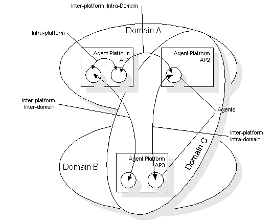
Figure 2: Types of agent communication (transport perspective)
Figure 2 shows agent communication from the transport perspective. There are 4 types of agent-agent communication depicted:
- Intra-platform
- Intra-platform, Inter-domain
- Inter-platform, Intra-domain
- Inter-platform, Inter-domain
It is important to realise that FIPA allows interoperability between disparate agent platforms. It is possible for an agent platform and even a whole domain to communicate using non-FIPA compliant means. However, supporting FIPA allows an agent platform to communicate with other proprietary agent systems. FIPA compliance could be supported throughout a proprietary agent platform, such that intra-platform communications were FIPA compliant, alternatively FIPA compliance could be supported by a gateway between FIPA and non-FIPA domains. Such a gateway has not been defined by the FIPA standards effort.
Agent Systems employ a unique method of communication, which promote the openness of these systems. This method of communication can enable agents to dynamically enter an agent system and contribute to its overall behaviour. Agent communication in FIPA97 is accomplished through the use of three components: the FIPA Agent Communication Language, content language, and ontology, this is a common approach for agent systems. An ontology enumerates the terms comprising the application domain and is not unlike a data dictionary in a traditional information system (see section 7 for a more detailed description of ontology). The content language is used to combine terms in the ontology into sentences (logical or otherwise) which are meaningful to agents who have committed to this ontology. Sometimes the ontology and content language are so tightly integrated that they become the same thing i.e. a list of sentences is the content language, which represent the ontology. Finally the ACL acts as a protocol, enabling the development of dialogues containing sentences of the content language between agents and defining certain semantics for the behaviour of agents participating in such dialogues. The relationship between ontology, content language and ACL is shown in Figure 3: Ontology, Content Language and ACL in FIPA97. A composition of terms from an ontology contained within a sentence of a content language, itself contained within a communicative act as defined by FIPA97 is known as a message and FIPA97 agents communicate by exchanging such messages.
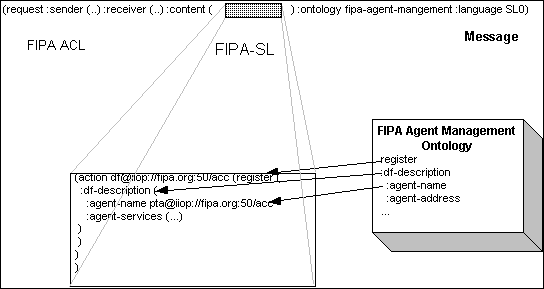
Figure 3: Ontology, Content Language and ACL in FIPA97
It should be noted that while FIPA97 specifies an ACL, which must be used by FIPA97 compliant systems, it does not place any restriction upon the use of content language or ontology. FIPA97 does specify the use of SL and standard ontologies for certain normative actions (e.g. agent registration) however this does not preclude the use of other user defined or standard content languages and ontologies for specific agent applications.
Messages are exchanged between agents through the use of a message transport. There are two types of message transport: the message transport, which delivers messages within an agent platform, and the message transport, which delivers messages between agent platforms. The internal platform message transport does not affect platform interoperability and hence is not a subject of standardisation by FIPA. The transport used to deliver messages between agent platforms is crucial to platform interoperability and hence is addressed in FIPA97. FIPA97 defines IIOP as the baseline transport protocol for delivery of messages between agent platforms, more specifically it defines an IDL interface called FIPA_Agent_97 containing one method, a one way void called message which takes as an input parameter a CORBA string. The meaning of this specification to the agent platform developer is as follows: the platform must make such an interface available over IIOP. The simplest way to do this is by developing this IDL interface using an ORB (Object Request Broker) which supports IIOP.
It is important to remember that while the use of IIOP is mandated by FIPA97 for platform interoperability, it is merely the baseline for communication between agent platforms. FIPA97 does not preclude the use of other communication protocols between agent platforms and accepts that other protocols may be more suitable depending on the application requirements (for example, realtime multimedia streaming). In such a case, agents on different platforms will make initial contact using the IIOP protocol and may subsequently agree to use a more suitable protocol, which they can both handle (an example of such a negotiation is given later in this document). FIPA97 thus mandates the use of IIOP only so that there will always be one well known method of communication available between agent platforms.
It is important to understand that the purpose of many of the interoperability mechanisms in the FIPA97 specification exist to enable interoperability between agent platforms, or between agents and third party agent platforms. The difference between these two types of interoperability is of great importance to an agent system or agent platform developer. The use of ACL within an agent platform allows an agent developer to implement an agent (or agent system) witch will run on another developers platform (of course the agents involved will have to support IIOP to communicate with that platform). However assume that the developer has control over the development of the platform and any agents which will run upon it. A consequence is that agent management actions within the agent platform do not necessarily have to be carried out through ACL. Take for example the situation where an agent wishes to register with the AMS and DF of its own agent platform. It is perfectly acceptable for that agent to register using a proprietary API provided by the platform if it knows how to do so. From a FIPA compliance perspective it is only necessary for the DF and AMS to have the FIPA mandated registration details pertaining to that agent available and to be able to provide these details to agents outside that platform through FIPA-ACL queries if so requested. ACL is required only when interacting with entities outside the agent platform. From an agent management perspective the minimal external interactions that a compliant agent platform must support are as follows:
1. The ACC must be able to deliver ACL messages between agents within its platform and agents external to its platform. The ACC must therefore support the ACL request-forward interface (this requires the ability to both understand and generate the request-forward communicative act in ACL).
2. The platform must support an ACL interface for all actions from external sources, which query registration details (on the AMS and DF).
3. The platform must support the ability for external DFs to register with its DF. The DF must therefore support an ACL interface for incoming DF registration actions. An additional consequence is that the DF must be capable of generating the required ACL actions to manage its registration with external DFs.
4. The platform must of course be able to understand and generate in ACL the exceptions necessitated by the above requirements.
These are the minimal requirements. If a platform wishes to support dynamic registration (the ability of external or third party agents to register with it) it must support the full DF and AMS interfaces through ACL.
Another way of interpreting these requirements is that when agent management operations are carried over the inter platform transport (i.e. through the ACC) these must be carried as ACL, when they are carried over the Internal Platform Message Transport (IPMT) they can be carried in a proprietary manner.
The purpose of this section is to describe how a FIPA compliant agent may be implemented. The information given does not imply that it is neither the only way nor necessarily the best method of implementation.
In this example application scenario there is a single FIPA Agent Platform, with two registered agents; a "Test-Agent" and a "Ping-Agent". Both agents must register with the DF and AMS on the platform before they can interact. The agent management action register required for these agents to register with the DF and AMS on the platform are shown in section 9.
The "Ping Agent" is a simple example of a FIPA agent implementation, which supports a subset of the ACL and a simple content language. The "Ping-Agent" also supports the FIPA mandated inter-platform mechanism to enable agents on other platforms to address it directly. The agent is able to respond to a request to inform the sender agent that it is 'alive'. The ACL to achieve this is shown below (the content language simple supports the single term alive.):
(request
:sender test-agent
:receiver ping-agent
:content (
inform
:sender ping-agent
:receiver test-agent
:content (alive)
:language simple)
:language fipa-acl)
The ACL message that the test-agent expects to receive in response to its request for the ping-agent to perform an act is shown below:
(inform
:sender ping-agent
:receiver test-agent
:content (alive)
:language simple)
The semantics of the request communicative act do not guarantee that the ping-agent will act upon the request made by the test-agent. It is therefore possible that the test-agent will not receive the inform message as expected even though the ping-agent is in fact alive. The impact of such a result is that the test-agent is still unaware of the ping-agent's status. This is an important aspect of the semantics of the ACL.
The minimum requirements of the message transport for the ACL specified in FIPA97 are that it is timely and reliable. However it should be noted that the concept of asynchronous communication is intrinsic to the nature of agents. To support the asynchronous nature of the ACL there is no requirement that the message transport mechanism delivers a given message directly to the receiver. The message transport will ideally support a store and forward architecture.
To enable agents to directly address the "Ping-Agent", its implementation needs to support the IIOP protocol. The simplest method to achieve this is to develop the IDL interface defined in FIPA97 Part 1, Annex A using an ORB (Object Request Broker) which supports IIOP.
To send the request message to the "Ping-Agent" the "Test-Agent" must invoke the message method of the "Ping-Agent". The ACL message encoded as a string is used as the parameter of the method invocation. To enable the "Test-Agent" to invoke the message method of the "Ping-Agent" the "Test-Agent" must first obtain the object reference to the FIPA_Agent_97 interface. This can be achieved by taking the IIOP URL component of the agent address (retrieved from the AMS) and converting this to an IOR (Interoperability Object Reference).
To enable the "Ping-Agent" to interpret the ACL message the implementation of the message method requires the ability to parse the parameter string. The parsing process translates the ACL message into an internal (implementation specific) representation (e.g. Java object or Prolog list) which can then be used for internal manipulation. The result of this manipulation may provide an internal representation of a outgoing message depending of the internal goals of the "Ping-Agent". The form of the message relates to semantics of original act received (i.e. inform). This internal representation of the message can be converted to a string, which can then be used as the parameter of the message method invocation on the "Test-Agent".
The "Ping-Agent" example considered neither the concepts of ACL message queues nor the effect of the ACL dialogues on internal agent state. These concepts can contribute to implementation of more realistic agents.
There is an obvious requirement for FIPA to support asynchronous agent communication (in fact the use of a well designed ACC is the first step towards implementing asynchronous communication at the agent level). If an agent A sends a message to agent B it is often unacceptable for agent A to be blocked while agent B processes the message. The IDL interface defined in FIPA97 Part 1 indicates by use of the 'oneway' keyword that the 'message' method will not block the invoking agent (the sender) whilst the receiving agent processes the method [1]. This is achieved, as the implementation does not require that the method return any value. In fact no call back is expected, so the calling process is able to continue execution. At the agent level it is expected that the receiving agent will respond with a further ACL message.
Use of a 'oneway' method explains how blocking on the sending side is avoided. In the "Ping-Agent" example this is sufficient to ensure that the "Test-Agent" does not block when interacting with the "Ping-Agent". However, to avoid blocking on the receiver side a mechanism to ensure that the agent is not forced to process the message as soon as it is received is required. This is particularly important when implementing more computational intensive agents such as the ACC. As processing the message may necessitate communication with other agents this processing may take a substantial amount of time. Figure 1 below illustrates two alternative implementations of the 'message' method. In example 1 the message received is added to a message queue with no further processing, the method ‘message’ then terminates. This example requires the use of a scheduling or threading model so that the subsequent processing of messages from the message queue does not adversely affect the message delivery mechanism. With the use of a message queue a receiving agent can determine itself when to process messages. In contrast to this, example 2 illustrates an implementation where the message is processed when the 'message' method is invoked. In this implementation, the agent is forced to process the message directly, this could impact its ability to receive messages from other agents. Although FIPA97 does not state explicitly that asynchronous communication is mandated it is highly desirable that FIPA97 compliant platforms implement a store and forward mechanism at least within the platforms ACC.
Example 1
//C++ implementation of FIPA_Agent_97 Interface
void FIPA_Agent_97_i :: message (char * acl_message) {
// add the message to the message queue : note that this is a simple operation which does not involve processing the message and should complete quickly
add_message_to_q(acl_message);
}
Example 2
//C++ implementation of FIPA_Agent_97 Interface
void FIPA_Agent_97_i :: message (char * acl_message) {
// process the message : note that this operation may take some
// time
process_message(acl_message);
}
Figure 1: Example of blocking versus non-blocking behaviour in an ACC
Another interesting facet of agent communication is the transmission of very large messages. Take for example the FIPA_Agent_97 interface. If agent A tries to push a 10MB message through this interface then the interface will be blocked for a considerable period of time while the transfer completes. This is not desirable especially if the receiver is an ACC, as other agents may not be able to get a transport level connection to the ACC during this time. An obvious solution to this type of problem is that large messages are segmented and transmitted as smaller packets and reconstructed upon arrival, it should be noted that GIOP 1.1 can support this through the use of the Fragment message type (which allows large requests to be transmitted over a series of IIOP messages). At any rate, its seems logical that such messages be handled through the use of a streaming service.
The ACC provides a basic messaging service based on a store and forward model to transport string messages between agents on different platforms. It may optionally provide support for other message transport models and protocols.
In the recommended model the ACC keeps a queue of messages for all agents currently registered with it, these messages can be retrieved by the agent on demand. The buffering behaviour (i.e. how messages are stored, for how long etc.) of the ACC is left to developers. The mechanism by which the ACC delivers messages to agents, if the ACC lets agents know when they have new messages etc. are also not covered in the specification.
The ACC on a platform represents the FIPA baseline messaging system. A message sent by agent A on platform AP-A to an agent B on AP-B as follows:
1. A passes the message to its ACC using the request forward action. The ACC will either refuse to handle the message (if it is too busy for example) or agree to try and deliver the message to B.
2. The ACC on platform AP-A now looks at the address in the receiver parameter and identifies the AP-B it needs to contact.
3. The ACC then attempts to contact the ACC on AP-B and pass on the message. If the other ACC on AP-B accepts the message, the message is transferred and the responsibility of the ACC on the first platform for the message ends. If the platform AP-B cannot be contacted the ACC may do one of the following: 1) Attempt to find an alternative addresses for the agent (using delegate agent field in DF description), 2) buffer the message and retry later or 3) discard the message. (Note no error message from the ACC to the agent is specified.)
4. Once the ACC on platform AP-B accepts the message it also accepts responsibility for its delivery.
5. The ACC may tell B that a message has arrived, it may just hold the message in a buffer until B next checks for new messages.
Note that there is little guarantee about message delivery, although there was consideration of specifying minimum buffering/message forwarding behaviour for ACCs. The main arguments against were
1. The difficulty in and potential cost to developers
2. Difficulty in taking into account the effects of minimum spec + enhanced buffering in ACCs - i.e. reasoning about what happens to a message - even setting a minimum spec may give little information about the overall behaviour of the message system.
This fundamentally asynchronous mode of communication gives the sender very little information on what happened to its message. This is provided for at the ACL level through the 'done request-forward' message. This can be viewed as “positive only” feedback, since ACCs are able to hold messages for agents and they may be buffered in the system.
Within this document "message delivery" is taken to mean where message is delivered when it becomes available in the internal state of the agent.
This does not mean the agent has read the message, however it could choose to + if the agent moved the message could/would move with it.
FIPA97 uses the concept of a GUID to ensure the unique identity of FIPA compliant agent's. An agent's GUID is formed by concatenating its Home Agent Platform (HAP) address e.g. “iiop://fipa.org:50/acc” to the agent's unique name within the platform e.g. “agent-1” resulting in a GUID of the following form:
agent-1@iiop://fipa.org:50/acc
Global uniqueness of the GUID is ensured because:
1. All agent platform addresses are unique (of the form iiop://<host>:<port>/<object-key>
2. Each agent platform ensures that agent names assigned locally are unique
An agent's GUID is useful within FIPA agent systems because it forms a basis for agent authentication. Given an agents GUID it is of course possible to determine the agents HAP address, using the HAP address one can contact the AMS of that platform. It is the responsibility of the AMS to then vouch for the agent specified by the GUID.
In the FIPA97 part 2 a selection of generic interaction protocols are defined describing the possible message exchanges between agents. For example, in the FIPA-request interaction protocol, one agent (the client agent) requests another agent (the server agent) to perform an action (note client and server here refer to client and server in the context of the requested service and to client and server in context of remote communication as both agents and hence peers in the communication process). Several alternative messages could be sent in return to such a message. The type of message to be returned can be the conditions under which the server agent does not satisfy the request or conditions that represent errors for the client agent. Included here are some guidelines for how a server agent should handle the reporting of such errors.
The proposed criteria are the following:
1. About the type of communicative act for the response:
a. when the requested action does not belong to the set of the actions supported by the server agent, the response is a communicative act of type “not-understood”;
b. when the requested action is supported by the server agent but the client agent is not authorised to request the action, the response is a communicative act of type “refuse”;
c. when the requested action is supported by the server agent, the client agent is authorised to request the action but the action is wrongly specified syntactically or semantically (e.g. its attributes are wrong, incomplete or unrecognisable), the response is a communicative act of type “refuse”;
d. when the requested action is supported by the server agent, the client agent is authorised to request the action, the action is syntactically and semantically correct but the server agent is overloaded attempting to perform other actions, the response is a communicative of type "refuse";
e. in all the other cases the server agent sends to the client agent a communicative act of type “agree”. Subsequently if any condition arises that prevents the server to complete successfully the requested action, the response is a communicative act of type “failure”; if it does not happen, the response is a communicative act of type “inform”.
2. About the content of the communicative act encoding the response in case of error:
a. in order to limit the size of the messages, the content of the response does not have to include the description of the requested action; this information is implicitly included in the attribute “in-reply-to” or “conversation-id” of the message; in this respect the client agent must use one of these attributes in the message encoding the request.
b. as far as the terminology is concerned, according to FIPA97, the term attribute is used for the action arguments (parameters); the term slot is used for the fields of an ontology object;
c. the content is a list of format “(<reason> <argument>+)”, where <reason> is a predicate that specifies the error condition and the remaining strings are its arguments. Examples of content string are “(wrong-attribute-value provider)”, “(unauthorised)”, “(missing-slot user birthdate)”.
FIPA mandates that every compliant platform supports the baseline protocol, which is IIOP. This ensures that agents on separate agent platforms can always communicate over one well-known channel. This does not preclude the possibility that agents can communicate over another communications channel if available. Indeed a scenario could be envisioned where two agents use the baseline protocol to negotiate about moving to another common protocol more suitable to their needs. Part of a simple conversation for that purpose might look something like the following:
Agent A asks agent B for its supported communications mechanisms:
(query-ref
:sender a@iiop://fipa.org:50/acc
:receiver b@iiop://agentland.org:81/acc
:language SL
:ontology communication-mechanisms
:content
(iota ?x (supported-communication-mechanisms
b@iiop://agentland.org:50/acc ?x))
)
Agent B tells agent A that it supports SMTP, HTTP and SMS:
(inform
:sender b@iiop://agentland.org:81/acc
:receiver a@iiop://fipa.org:50/acc
:language SL
:ontology communication-mechanisms
:content
(= (iota ?x
(supported-communication-mechanisms
b@iiop://agentland.org:50/acc ?x))
((ip http agentland.org 90)
(ip smtp fipa-agent-b@agentland.org)
(gsm sms 123/1234567))
)
)
Agent A then requests Agent B to continue this conversation over email:
(request
:sender a@iiop://fipa.org:50/acc
:receiver b@iiop://agentland.org:50/acc
:language SL
:ontology
communication-mechanisms
:content
(action b@iiop://agentland.org:50/acc
(change-conversation-channel
( :in fipa-agent-b@agentland.org
:out fipa-agent-a@fipa.org
)
)
)
)
Of course this example assumes that both A and B have committed to a common ontology over which to perform this negotiation.
A sample application domain of scheduling a meeting for human users is described here to help illustrate the construction of a FIPA97 agent-based application. This example aims to illustrate features of FIPA such as:
- agent registration;
- agent location;
- software wrappers;
- remote platform registration.
The following diagram illustrates the agent architecture for the Meeting Scheduling application.
|
Figure 1 Meeting Scheduler Agent Architecture
The application architecture consists of the agents described in part 1 of FIPA97 (AMS, DF and ACC) domain specific Personal Agents that represent the human users, and wrapper agents as described in part 3 of FIPA97.
For each user of the application there is an associated Personal Agent which has knowledge of its users preferences with regards to scheduling meetings. In the sample scenario illustrated above there are Personal Agents for 4 human users. In this sample scenario the human users use a electronic calendar to maintain their appointments. As the Personal Agents must have access to their users schedule information a wrapper agent is used to convert the ACL requests made by the Personal Agents to the internal API for the electronic calendar application. The interaction with the wrapper agent enables the Personal Agents to access the calendar information stored by the application. It is this data which enables the Personal Agents to respond to meeting requests.
Each of the domain specific agents described above interact by exchanging FIPA ACL messages as specified in part 2 of FIPA97. To enable each of the agents to locate each other as required for successful operation of the application the agents must first register with the AMS and DF of their home platform. Agents which register with the AMS of a platform may then utilise the services of that platform (e.g. DF and ACC). The agents may then register their services in the DF so that they can located by other agents if required.
The following diagram illustrates the required interactions between each of the entities (humans and agents) in the sample scenario in an attempt to schedule a meeting suitable for all attendees. The interactions described assume that each of the agents have previously registered at least with the DF of their home platform and that all of the agents can be located by searching the local DF. In the scenario the Personal Agents are consider to be either a co-ordinator (one of these in the scenario) or requested participants (one per human user requested to attend the meeting). The Personal Agent requested to schedule the meeting assumes the role of the co-ordinator.
| 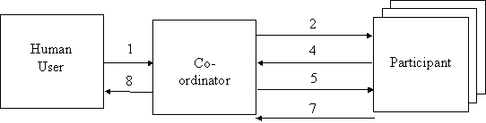 | |||||
Figure 2 - Data flow in the Meeting Scheduling Sample Application
Referring to Figure 2, an explanation if the numbered flows follows:
1. The human user requests that their Personal Agent attempt to schedule a meeting with some specified participants.
2. A call for proposals message is sent to the participants Personal Agent from the co-ordinator Personal Agent following the FIPA Contract Net protocol described in FIPA97 part 2.
3. The participant Personal Agents check their calendars for free time slots to attend the requested meeting. This is achieved by sending a message to the Calendar wrapper which then queries the Calendar via the appropriate API call. The result of the API call is returned to the participant agent by the wrapper agent as an ACL message.
4. The participant Personal Agents reply to the co-ordinator Personal Agent with the proposed meeting times as per the FIPA Contract Net protocol. The form of this message is either a proposal or a refusal.
5. The co-ordinator Personal Agent sends accept and reject messages to invitees as described by the FIPA Contract Net protocol.
6. The participant Personal Agents who agree to the proposed meeting update their calendars with the agreed meeting time by invoking the Calendar wrapper agent.
7. The participant Personal Agents which agree to the proposed meeting inform the co-ordinator that they have completed the request to schedule a meeting (accept only) as per the FIPA Contract Net protocol.
8. The co-ordinator Personal Agent notifies the human user of the agreed meeting information, as do all of the participant Personal Agents.
The above description assumes for simplicity that all of the participant agents propose a meeting time. A more realistic scenario may involve certain agents refusing to propose a meeting time for a variety of reasons (e.g. no available slots, agent has instructions that their user doesn’t wish to meet with certain other people, etc.).
To ensure that each of the agents in the sample scenario have a common understanding of the domain specific terms used in their communication, a Meeting Scheduler Ontology must be defined. This ontolgoy specifies the syntax for messages, the PA Meeting Scheduler Ontology. Some additional semantics are also specified. The messages formed using this syntax can be inserted into an ACL message in the content field, provided the ontology field is set to PA-Meeting. The messages described in this ontology are envisaged for use with the FIPA-Contract-Net protocol. An example of the content field of a typical cfp message is:
(action PA-Meet an-agent@iiop://blh.com:8000/name
:PA-Meeting (
:Location A-room
:Description Demo meeting
:Priority 1
:TimeIntervals (
:StartRange 19980606T1200-19980606T1500)
:Duration 60))
Further details of the grammar are described in a section x.
In this sample scenario the agents negotiate simply over the starting time of the meeting. Initially a meeting is proposed which either has a single start time, or a range of possible start times, and a duration. In the case of a single start time, each invitee is queried and if it can be present then it is asked to schedule the meeting. This is the simplest case and no negotiation is needed. The more complicated case is that of having a range of possible start times, and this is where the negotiation starts to play a part. Each agent checks its calendar and returns its free time to the co-ordinator. The co-ordinator then looks at each agents’ free time and works out the time slot when most agents can attend a meeting, in the range originally given. It then lets each of these agents know the meeting time that has been decided.
This is quite a simple analytical model and it is easy to conceive a much more complicated negotiation model where several iterations of negotiations take place, with many factors being considered (such as location, duration, policy - e.g. no meetings before nine in the morning etc.).
In short, the co-ordinating agent is activated by human user and proceeds to issue a call for proposals to the invitees. Each invitee checks its calendar and replies with a propose or refuse message[8], depending on whether it is free or not. The co-ordinator looks at each incoming message and works out the best time to hold the meeting (using whichever negotiation resolution engine is present), sending accept-proposal and reject-proposal messages to agents that can attend the final meeting, and those that can’t, respectively. Each invitee which can attend the final meeting then responds with an inform message after it has scheduled the meeting details in its calendar. See the FIPA-Contract-Net protocol described in FIPA97 part 2 for a more detailed description. Figure 3 shows the message order of the negotiation protocol.
| 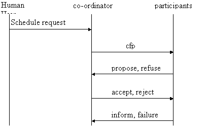 | |||
|
|||
Figure 3 - Messaging order of the FIPA-Contract-Net protocol
On receiving a cfp message each invitee agent will check it’s calendar between the times given for the range of possible start times. The agents will then return a list of every time slot[9] for which they are available which is of the required meeting length or greater.
After each agent sends a proposal to the meeting co-ordinator (which contains one or more time slots specifying when the agent is available) the co-ordinator passes the time slot information and associated agent names to the negotiation engine. For each of the time slots of the required meeting length available in the original meeting proposal, the agent compares each of the time slots returned by the invitees and records the number of participants that can attend that particular time slot. After each possible time slot from the original proposal has been analysed the agent returns the details of the time slot for which most agents can attend, and also returns lists of agents that can, and can’t, attend a meeting at this time. The co-ordinator then uses this information to inform invitees of the agreed meeting time or to cancel their invitation.
Assuming that the user wishes to schedule a meeting for 60 minutes between 12.00 and 15.00.
The invitee agents (let us assume that there are four of them) return the following free time information (remember: all free time information is at least as long as the original meeting request length, i.e. 60 minutes):
|
Agent |
Free time |
|
Bob |
12.00-13.00, 14.00-15.00 |
|
Clive |
13.00-15.00 |
|
Kevin |
12.00-13.00 |
|
Keith |
12.30-13.30, 14.00-15.00 |
The co-ordinator agent will then analyse each of the time slots available from the original meeting request:
|
Agent |
Time slot |
|||||
|
|
12.00-12.30 |
12.30-13.00 |
13.00-13.30 |
13.30-14.00 |
14.00-14.30 |
14.30-15.00 |
|
Bob |
ü |
ü |
|
|
ü |
ü |
|
Clive |
|
|
ü |
ü |
ü |
ü |
|
Kevin |
ü |
ü |
|
|
|
|
|
Keith |
|
ü |
ü |
|
ü |
ü |
|
Total |
2 |
3 |
2 |
1 |
3 |
3 |
From this table it can be seen that the time slots where most agents can attend are: 12.30-13.00 and 14.00-15.00. Since the 12.30-13.00 slot is not 60- minutes long it will be ignored, hence the meeting will be scheduled to start at 14.00. The attendees are Bob, Clive, and Keith, and Kevin cannot attend.
N.B. No negotiation over duration of the meeting occurs. In this sample application only the start times of meeting are altered from the original proposal. If only one agent can make a meeting it is cancelled.
The following represents the syntax for the PA Meeting Scheduler Ontology. The Rules for Well Formed messages describes some of the semantics of the ontology which are not explicit in the grammar.
PAAction = "(" "PA-MEET" "(" ":PA-Meeting" PA-Meeting-description+ "))"
PA-Meeting-description =
Location
| Description
| Priority
| ":TimeIntervals (" TimeInterval+ ")"
| Duration.
Location = ":Location" Word.
Description =":Description" StringLiteral.
Priority = ":Priority" Digit.
TimeInterval = Start
| BetweenTimes.
Start = ":Start" Time.
Duration = ":Duration" IntegerLiteral.
BetweenTimes = ":StartRange" Time "-" Time.
Word= As defined by SL0
StringLiteral= As defined by SL0
IntegerLiteral= As defined by SL0
Time= Year Month Day "T" Hour Minute.
Year= Digit Digit Digit Digit.
Month= Digit Digit.
Day= Digit Digit.
Hour= Digit Digit.
Minute= Digit Digit.
The following table summarises the semantic rules of using the PA Meeting grammar for the current scheduling purposes.
|
|
Attribute |
|
|
|
|
|
|
Performative |
|
|
|
|
|
|
|
|
Location |
Description |
Priority |
Start |
Range |
Duration |
|
Cfp |
M |
O |
O |
O |
O |
M |
|
Propose |
O |
O |
O |
O |
O |
O |
|
Accept-Proposal |
O |
O |
O |
M |
- |
O |
|
Inform |
O |
O |
O |
M |
- |
O |
|
|
|
|
|
|
|
|
Key: M = Mandatory O = Optional - = Not permitted
A cfp should include at minimum either a start time and duration or range of times and duration in addition to the mandatory location information.
- Priority ::= 1 = high.
- Location and Description contain unconstrained text strings which provide user readable information about the planned meeting.
- A proposal message which includes a range of times and a duration (e.g. (:StartRange 19970605T1200-19970605T1800 :Duration 60)) is taken to mean that a meeting of the specified duration can be scheduled within the time-span (i.e. the meeting would end by the end time range, which in this case would be 1800).
-
The non-terminal TimeInterval is used to
express the meeting logistics. The
TimeInterval is used here to indicate the available time slots. The potential meeting duration is constant
independent of timeslot.
Expressing the information as a tuple of
time and duration, where time is either a single value representing the start
time or is a range of possible start times would enable more flexibility and a
more complex negotiation scenario.
- Location, Description and Priority information need only be described in the cfp message as the details could be maintained by individual agents. The conversation-id ensures the agent can track the dialog.
The agent interactions illustrated in this section perform the initialisation required by a FIPA platform such that the application specific agents may register on and utilise the services of the platform. The following sample ACL messages will illustrate the core platform agents (AMS, DF and ACC) registering their services. Once this agents are available on a platform, the sample agents described will register their services.
The following message registers the DF with the AMS on the Small Company Agent Platform:
(request
:sender df@iiop://companyxyz.com:9000/acc
:receiver (ams@iiop://companyxyz.com:9000/acc)
:content
(action ams@iiop://companyxyz.com:9000/acc
(register-agent
(:ams-description
(:agent-name df@iiop://companyxyz.com:9000/acc)
(:agent-address (df@iiop://companyxyz.com:9000/acc))
(:ap-state active))))
:language SL0
:reply-with id
:protocol fipa-request
:ontology fipa-agent-management)
with the expected reply being:
(inform
:sender ams@iiop://companyxyz.com:9000/acc
:receiver (df@iiop://companyxyz.com:9000/acc)
:content
(done
(action ams@iiop://companyxyz.com:9000/acc
(register-agent
(:ams-description
(:agent-name df@iiop://companyxyz.com:9000/acc)
(:agent-address (iiop://companyxyz.com:9000/acc))
(:ap-state active) ))))
:language SL0
:in-reply-to id
:protocol fipa-request
:ontology fipa-agent-management)
The following message registers the DF with the AMS on the Travel Broker Agent Platform:
(request
:sender df@iiop://worldtravel.brokers:9000/brokeracc
:receiver (ams@iiop://worldtravel.brokers:9000/brokeracc)
:content
(action ams@iiop://worldtravel.brokers:9000/brokeracc
(register-agent
(:ams-description
(:agent-name df@iiop://worldtravel.brokers:9000/brokeracc)
(:agent-address (iiop://worldtravel.brokers:9000/brokeracc))
(:ap-state active))))
:language SL0
:reply-with id
:protocol fipa-request
:ontology fipa-agent-management)
with the expected reply being:
(inform
:sender ams@iiop://worldtravel.brokers:9000/brokeracc
:receiver (df@iiop://worldtravel.brokers:9000/brokeracc)
:content
(done
(action ams@iiop://worldtravel.brokers:9000/brokeracc
(register-agent
(:ams-description
(:agent-name df@iiop://worldtravel.brokers:9000/brokeracc)
(:agent-address (iiop://worldtravel.brokers:9000/brokeracc))
(:ap-state active) ))))
:language SL0
:in-reply-to id
:protocol fipa-request
:ontology fipa-agent-management)
The following ACL describes the interactions required to enable the Personal Travel Agent to register on it's Home Agent Platform:
(request
:sender pta@iiop://companyxyz.com:9000/acc
:receiver (ams@iiop://companyxyz.com:9000/acc)
:content
(action ams@iiop://companyxyz.com:9000/acc
(register-agent
(:ams-description
(:agent-name pta@iiop://companyxyz.com:9000/acc)
(:agent-address (iiop://companyxyz.com:9000/acc))
(:ap-state active))))
:language SL0
:reply-with id1
:protocol fipa-request
:ontology fipa-agent-management)
The following ACL describes the expected response from the AMS asked to perform the register action, if the action is completed successfully.
(inform
:sender ams@iiop://companyxyz.com:9000/acc
:receiver (pta@iiop://companyxyz.com:9000/acc)
:content
(done
(action ams@iiop://companyxyz.com:9000/acc
(register-agent
(:ams-description
(:agent-name pta@iiop://companyxyz.com:9000/acc)
(:agent-address (iiop://companyxyz.com:9000/acc))
(:ap-state active)))))
:language SL0
:in-reply-to id1
:protocol fipa-request
:ontology fipa-agent-management)
The following ACL describes the interactions required to enable the Travel Broker Agent to register on it's Home Agent Platform:
(request
:sender travelagent@iiop://worldtravel.brokers:9000/brokeracc
:receiver (ams@iiop://worldtravel.brokers:9000/brokeracc)
:content
(action ams@iiop://worldtravel.brokers:9000/brokeracc
(register-agent
(:ams-description
(:agent-name pta@iiop://worldtravel.brokers:9000/brokeracc)
(:agent-address (iiop://worldtravel.brokers:9000/brokeracc))
(:ap-state active))))
:language SL0
:reply-with id1
:protocol fipa-request
:ontology fipa-agent-management)
The following ACL describes the expected response from the AMS asked to perform the register action, if the action is completed successfully.
(inform
:sender ams@iiop://worldtravel.brokers:9000/brokeracc
:receiver (travelagent@iiop://worldtravel.brokers:9000/brokeracc)
:content
(done
(action ams@iiop://worldtravel.brokers:9000/brokeracc
(register-agent
(:ams-description
(:agent-name travelagent@iiop://worldtravel.brokers:9000/brokeracc)
(:agent-address (iiop://worldtravel.brokers:9000/brokeracc))
(:ap-state active)))))
:language SL0
:in-reply-to id1
:protocol fipa-request
:ontology fipa-agent-management)
The application agents must be first introduced to the agent platform so that they can locate each other and share their services. In this sample scenario each of the Personal Agents must register with the AMS and DF of their home platform. Registration with the AMS ensures that they can access the services of the platform. The AMS also provides an authentication function for the agents registered with it. This issue is described further in the FAQ appendix of this document. The following example ACL illustrates how the Personal Agent for Ally will register with the local platform’s AMS.
(request
:sender ally@iiop://47.108.97.125:50/acc
:receiver ams@iiop://47.108.97.125:50/acc
:content
(action ams@iiop://47.108.97.125:50/acc
(register
(:df-description
(:agent-name ally@iiop://47.108.97.125:50/acc)
(:ap-state active))))
:language SL0
:protocol fipa-request
:ontology fipa-agent-management)
The AMS will acknowledge the Personal Agent for Ally has been registered successfully by returning the ‘Done’ acknowledge message to Ally as shown below.
(inform
:sender ally@iiop://47.108.97.125:50/acc
:receiver ams@iiop://47.108.97.125:50/acc
:content
(done
(action ams@iiop://47.108.97.125:50/acc
(register
(:df-description
(:agent-name ally@iiop://47.108.97.125:50/acc)
(:ap-state active)))))
:language SL0
:protocol fipa-request
:ontology fipa-agent-management)
Each of the other Personal Agents in the sample application would register with their associated AMS in the same fashion. The only noticeable difference will be the name of the agent registered. Once the agents are registered with the AMS of the platform it is then possible for them to register their services with the DF of that platform.
Registration with the DF enables other agents to locate it based on search criteria such as the types of services which it offers. The following example ACL illustrates how the Personal Agent for Ally will register with the local platform’s DF. In this example the Personal Agent registers that it provides the ‘pa’ (Personal Assistant) service and that it can understand the ‘meet-sched’ ontology (as described in a previous section of this document).
(request
:sender ally@iiop://47.108.97.125:50/acc
:receiver df@iiop://machine.org:50:acc
:content
(action df@iiop://machine.org:50:acc
(register
(:df-description
(:agent-name ally@iiop://47.108.97.125:50/acc)
(:ownership ally)
(:df-state active)
(:agent-services
(:service-description
(:service-type pa)
(:service-ontology meet-sched))))))
:language SL0
:protocol fipa-request
:ontology fipa-agent-management)
The DF will acknowledge the Personal Agent for Ally has been registered successfully by returning the ‘Done’ acknowledge message to Ally as shown below.
(inform
:sender df@iiop://47.108.97.125:50/acc
:receiver ally@iiop://47.108.97.125:50/acc
:content
(done
(action df@iiop://47.108.97.125:50/acc
(register
(:df-description
(:agent-name ally@iiop://47.108.97.125:50/acc)
(:ownership ally)
(:df-state active)
(:agent-services
(:service-description
(:service-type pa)
(:service-ontology meet-sched)))))))
:language SL0
:protocol fipa-request
:ontology fipa-agent-management)
Each of the other Personal Agents in the sample application would register with their associated DF in the same fashion. The only noticeable difference will be the name of the agent registered. Similarly the wrapper agents may also register with the AMS and DF in the same way, but in this case the service-type will also indicate that it is a ‘fipa-wrapper’ agent instead of a ‘pa’. For example the ACL to register the wrapper agent would like the following:
(request
:sender calender@iiop://47.108.97.125:50/acc
:receiver df@iiop://machine.org:50:acc
:content
(action df@iiop://machine.org:50:acc
(register
(:df-description
(:agent-name calender@iiop://47.108.97.125:50/acc)
(:ownership ally)
(:df-state active)
(:agent-services
(:service-description
(:service-type fipa-wrapper)
(:service-ontology meet-sched))))))
:language SL0
:protocol fipa-request
:ontology fipa-agent-management)
Once each of the application specific agents has been registered on the appropriate platforms the application can be used. A example use of this FIPA agent based system is described in the following sections.
It is possible and often desirable for an agent to register remotely on other agent platforms enabling it to use the services of that platform (e.g. the ACC) in addition to advertising it's own services. To enable remote registration the agent must either support the baseline protocol itself or be registered on a FIPA platform such that the services of the ACC can be used. The required register action will involve the agent specifying it's name as determined at the initial registration. The address given may include a protocol specific to the remote agent platform.
The following ACL describes the interactions required to enable the Personal Agent for Ally previously registered on agent platform at 47.108.97.125 to remotely register on the agentland agent platform as shown in the example ACL messages that follow:
(request
:sender ally@iiop://47.108.97.125:50/acc
:receiver acc@iiop://47.108.97.125:50/acc
:language SL0
:reply-with id1
:protocol fipa-request
:ontology fipa-agent-management)
:content
(action acc@iiop://47.108.97.125:50/acc
(forward
(request
:sender ally@iiop://47.108.97.125:50/acc
:receiver ams@iiop://agentland.com:50/acc
:content
(action ams@iiop://agentland.com:50/acc
(register-agent
(:ams-description
(:agent-name ally@iiop://47.108.97.125:50/acc)
(:ap-state active))))
:language SL0
:reply-with id1
:protocol fipa-request
:ontology fipa-agent-management)
))))
The following ACL describes the expected response from the AMS on the remote platform that was asked to perform the register action, if the action is completed successfully.
(request
:sender ams@iiop://agentland.com:50/acc
:receiver acc@iiop://agentland.com:50/acc
:language SL0
:reply-with id1
:protocol fipa-request
:ontology fipa-agent-management)
:content
(action ams@iiop://agentland.com:50/acc
(forward
(inform
:sender ams@iiop://agentland.com:50/acc
:receiver ally@iiop://47.108.97.125:50/acc
:content
(done
(action ams@iiop://agentland.com:50/acc
(register-agent
(:ams-description
(:agent-name ally@iiop://47.108.97.125:50/acc)
(:ap-state active)))))
:language SL0
:in-reply-to id1
:protocol fipa-request
:ontology fipa-agent-management)
))))
A remotely registered agent must remain registered on it's Home Agent Platform so that communication via the ACC is possible. Future ACL messages will only be routed by the ACC to the agent if the agent is known on that platform.
The scenario is invoked by the human user (Ally) requesting that their personal agent attempts to schedule a meeting on 9 February 1999 in the afternoon (between 1200 and 1600) with Bob. It is assumed that the human makes the request via a GUI. The GUI locates the agent name for the Personal Agent who initiated the request by sending the following search request to the platform's DF. The encoded search request in the following example indicates that the agent sending the message requires details of the agent which is owned by Ally and has the registered service type of ‘pa’ (Personal Assistant). To perform this search it is suggested that only one DF is used.
(request
:sender gui@iiop://47.108.97.125:50/acc
:receiver df@iiop://47.108.97.125:50/acc
:content
(action df@iiop://47.108.97.125:50/acc
(search
(:df-description
(:ownership ally
(:agent-services
(:service-description
(:service-ontology meet-sched)
(:service-type pa))))
:df-depth Exactly 1)))
:language SL0
:protocol fipa-request
:ontology fipa-agent-management)
As the Personal Agent for Ally has been previously registered with the selected DF, the following response is sent by the DF to the GUI agent:
(inform
:sender df@iiop://47.108.97.125:50/acc
:receiver gui@iiop://47.108.97.125:50/acc
:content
(result
(:df-description
(:agent-name ally@iiop://47.108.97.125:50/acc)
(:ownership ally)
(:df-state active)
(:agent-services
(:service-description
(:service-type pa)
(:service-ontology meet-sched))))))
:language SL0
:protocol fipa-request
:ontology fipa-agent-management)
The actual request to schedule the meeting shown below is then sent to Ally’s Personal Agent.
(request
:sender gui@iiop://47.108.97.125:50/acc
:receiver ally@iiop://47.108.97.125:50/acc
:content
(action ally@iiop://47.108.97.125:50/acc
MEETING-DETAILS (:meeting
(PA-MEET (:PA-Meeting
:Location SNT
:Description donuts
:TimeIntervals
(:StartRange 19990209T1200-19990209T1600)
:Duration 60))
:invitees (bob)))
:language SL0
:ontology meet-sched
:protocol fipa-request
:conversation-id ally )
In this example the Personal Agent for Ally takes the role of co-ordinating the meeting and the Personal agent for Bob is a requested participant in that meeting.
For the co-ordinating agent to contact each of the requested participant agents it must first find the appropriate agent names. This task is accomplished by searching the DF for the Personal Agents owned by each of the requested participants. For example, for Ally’s Personal Agent to locate the Personal Agent for Bob the following ACL request would be sent to the DF:
(request
:sender ally@iiop://47.108.97.125:50/acc
:receiver df@iiop://47.108.97.125:50/acc
:content
(action df@iiop://47.108.97.125:50/acc
(search
(:df-description
(:ownership bob
(:agent-services
(:service-description
(:service-ontology meet-sched)
(:service-type pa))))
:df-depth Exactly 1)))
:language SL0
:protocol fipa-request
:ontology fipa-agent-management)
As the Personal Agent for Bob has been previously registered with the selected DF, the following response is sent by the DF to the Personal Agent named Ally:
(inform
:sender df@iiop://47.108.97.125:50/acc
:receiver ally@iiop://47.108.97.125:50/acc
:content
(result
(:df-description
(:agent-name bob@iiop://47.108.97.125:50/acc)
(:ownership ally)
(:df-state active)
(:agent-services
(:service-description
(:service-type pa)
(:service-ontology meet-sched))))))
:language SL0
:protocol fipa-request
:ontology fipa-agent-management)
The actual request to propose a time to schedule the meeting shown below is then sent to Bob’s Personal Agent.
(cfp
:sender ally@iiop://47.108.97.125:50/acc
:receiver bob@iiop://47.108.97.125:50/acc
:content
(action bob@iiop://47.108.97.125:50/acc
(PA-MEET
(:PA-Meeting
:Location SNT
:Description donuts
:Priority 1
:TimeIntervals
(:StartRange 19990209T1200-19990209T1600)
:Duration 60)))
:reply-with ally
:language SL0
:ontology meet-sched
:protocol fipa-contract-net
:conversation-id bob)
On receipt this request to schedule the meeting the Personal Agent for Bob must first consult the appropriate calender information to obtain each of the free slots for the human user represented. To access this calender information the appropriate wrapper agent must first be located. This is achieved by searching the DF in a similar method to locating the Personal Agents of human users. Once the wrapper agent has been located it must be first requested initialise the service. This is achieve by sending the ‘init’ request to the wrapper agent as illustrated below.
(request
:sender bob@iiop://47.108.97.125:50/acc
:receiver calendar@iiop://47.108.97.125:50/acc
:content
(action calendar@iiop://47.108.97.125:50/acc
(init
(:service-description
(:service-name Calendar))
(:agent-name bob@iiop://47.108.97.125:50/acc)
:reply-with ally
:language SL0
:ontology fipa-wrapper
:protocol fipa-request )
To acknowledge the wrapper agent's intention to perform the requested ‘init’ action the following ‘agree’ message is sent in reply to Bob’s Personal Agent as described below:
(agree
:sender calendar@iiop://47.101.112.248:50/acc
:receiver bob@iiop://47.108.97.125:50/acc
:content
(action calendar@iiop://47.101.112.248:50/acc
(init
(:service-description
(:service-name Calendar))
(:agent-name bob@iiop://47.108.97.125:50/acc)))
:language SL2
:conversation-id bob)
Once the wrapper agent has successfully completed the requested ‘init’ action confirmation of the task completion is sent to Bob’s Personal Agent as described below:
(inform
:sender calendar@iiop://47.101.112.248:50/acc
:receiver bob@iiop://47.108.97.125:50/acc
:content
(done
(action calendar@iiop://47.101.112.248:50/acc
(init
(:service-description
(:service-name Calendar))
(:agent-name bobd@iiop://47.108.97.125:50/acc)))
(:service-instance-id calendar-9090519873600))
:language SL2
:conversation-id bob)
Receipt of the ‘done’ message by Bob’s Personal Agent indicates that it is now possible for the free slot information to be accessed. To achieve this Bob’s Personal Agent requested that the wrapper agent invokes a function of the wrapped service (e.g. check for free slots). The example ACL message to achieve this is shown below:
(request
:sender bob@iiop://47.108.97.125:50/acc
:receiver calendar@iiop://47.108.97.125:50/acc
:content
(action calendar@iiop://47.108.97.125:50/acc
(invoke
(:service-instance-id calendar-9090518074800))
(:command query-times (60 19990209T1200 19990209T1600)))
:reply-with ally
:language SL2
:ontology fipa-wrapper
:protocol fipa-request)
Once more the agent acknowledges its intention to perform the requested action by replying with an ‘agree’ message as illustrated in the following ACL message:
(agree
:sender calendar@iiop://47.101.112.248:50/acc
:receiver bob@iiop://47.108.97.125:50/acc
:content
(action calendar@iiop://47.108.97.125:50/acc
(invoke
(:service-instance-id calendar-9090518074800))
(:command query-times (60 19990209T1200 19990209T1600)))
:in-reply-to ally
:language SL2
:conversation-id bob)
Once the wrapper agent has successfully completed the requested ‘invoke’ action confirmation of the task completion is sent to Bob’s Personal Agent as described below:
(inform
:sender calendar@iiop://47.101.112.248:50/acc
:receiver bob@iiop://47.108.97.125:50/acc
:content
(done
(action calendar@iiop://47.101.112.248:50/acc
(invoke
(:service-instance-id calendar-9090519873600))
(:command query-times (60 19990209T1200 19990209T1600)))
(PA-MEET
(:PA-Meeting
:TimeIntervals
(:StartRange 19990209T1200-19990209T1600))))
:language SL2
:conversation-id bob)
The message sent by the wrapper to Bob’s personal agent also includes details of the times which are free according to the details maintained in the electronic calender program. These times can be then used to propose a time for the meeting in response to the call from Ally’s Personal Agent. The form on the proposal sent by Bob’s personal agent is shown below:
(propose
:sender bob@iiop://47.108.97.125:50/acc
:receiver ally@iiop://47.108.97.125:50/acc
:content
(action bob@iiop://47.108.97.125:50/acc
(PA-MEET
(:PA-Meeting
:Location unknown
:Description unknown
:Priority 1
:TimeIntervals
(:StartRange 19990209T1200-19990209T1600)
:Duration 60)))
:reply-with bob
:language SL0
:ontology meet-sched
:protocol fipa-contract-net
:conversation-id ally)
On receipt of this proposal for a meeting time Ally’s Personal Agent determines that it is happy to accept the suggested meeting. Ally’s Personal Agent achieves this by replying to Bob’s Personal Agent with an ‘accept-proposal’ message as shown in the following example:
(accept-proposal
:sender ally@iiop://47.108.97.125:50/acc
:receiver bob@iiop://47.108.97.125:50/acc
:content
(action bob@iiop://47.108.97.125:50/acc
(PA-MEET
(:PA-Meeting
:Location SNT
:Description donuts
:Priority 1
:TimeIntervals
(:StartRange 19990209T1200-19990209T1600)
:Duration 60)))
:reply-with ally
:language SL0
:ontology meet-sched
:protocol fipa-contract-net
:conversation-id bob)
Bob’s Personal Agent on receipt of the acknowledgement for the proposed meeting requests that the meeting details are used to update the electronic calender information. This is achieved by Bob’s Personal Agent requesting that the wrapper agent invokes the ‘add-meeting’ service as illustrated in the following ACL message:
(request
:sender bob@iiop://47.108.97.125:50/acc
:receiver calendar@iiop://47.101.112.248:50/acc
:content
(action calendar@iiop://47.101.112.248:50/acc
(invoke
(:service-instance-id calendar-9090519873600))
(:command add-meeting
(PA-MEET
(:PA-Meeting
:Location SNT
:Description donuts
:Priority 1
:TimeIntervals
(:StartRange 19990209T1200-19990209T1600)
:Duration 60))))
:reply-with bob
:language SL2
:ontology fipa-wrapper
:protocol fipa-request)
As with the previous interactions with the wrapper agent it responds to this ‘invoke’ request by first replying with an ‘agree’ message to indicate its intention to perform the requested action. Once the action has been completed the wrapper agent sends a message to confirm that the task has been completed. As Bob’s Personal Agent has finished with the services of the calendar wrapper agent it requested that the wrapper closes its connection with the integrated service. This is achieved by requesting that the wrapper agent performs the ‘close’ action as illustrated in the following ACL message:
(request
:sender bob@iiop://47.108.97.125:50/acc
:receiver calendar@iiop://47.101.112.248:50/acc
:content
(action calendar@iiop://47.101.112.248:50/acc
(close
(:service-instance-id calendar-9090519873600))
(:agent-name un-named@iiop://47.108.97.125:50/acc))
:reply-with bob
:language SL2
:ontology fipa-wrapper
:protocol fipa-request)
The wrapper agent acknowledges its intention to perform the action by first sending the ‘agree’ message as previously described in this example. Further, once the action has been completed successfully the wrapper informs Bob’s Personal Agent with the following ACL message:
(inform
:sender calendar@iiop://47.101.112.248:50/acc
:receiver bob@iiop://47.108.97.125:50/acc
:content
(done
((action calendar@iiop://47.101.112.248:50/acc
(close
(:service-instance-id calendar-9090519873600))
(:agent-name bob@iiop://47.108.97.125:50/acc))))
(calendar@iiop://47.101.112.248:50/acc))
:language SL2
:conversation-id bob)
Bob’s Personal Agent must now respond to the ‘accept-proposal’ message sent by Ally’s Personal Agent to acknowledge the completion of the meeting scheduling negotiation. This indication is made by Bob’s Personal Agent sending the ACL message which describes that it has performed the meeting scheduling task as requested.
(inform
:sender bob@iiop://47.108.97.125:50/acc
:receiver ally@iiop://47.108.97.125:50/acc
:content
(done
(action ally@iiop://47.108.97.125:50/acc
ARRANGED-MEETING
(:meeting
(PA-MEET (:PA-Meeting
:Location SNT
:Description donuts
:Priority 1
:TimeIntervals
(:StartRange 19990209T1200-19990209T1600)
:Duration 60))
:coming (bob))))
:reply-with ally
:language SL0
:ontology meet-sched
:protocol fipa-contract-net)
The interactions between the co-ordinator (Ally) and the other participants as described in the outline for the sample application would follow the same format as the examples given in this section. The Personal Agents for each of the other users will use separate instances of the calender program to obtain free slot information.
At any point in time an agent may decide to remove the service which it has advertised in the DF on a platform. This task can be achieved by requested that the DF performs the ‘de-register’ action for the agent identified by name. For example, the following ACL message illustrates that Ally’s Personal Agent no longer wishes to perform the task:
(request
:sender ally@iiop://47.108.97.125:50/acc
:receiver df@iiop://machine.org:50:acc
:content
(action df@iiop://machine.org:50:acc
(deregister
(:df-description
(:agent-name ally@iiop://47.108.97.125:50/acc))))
:language SL0
:protocol fipa-request
:ontology fipa-agent-management)
The DF will acknowledge that Personal Agent for Ally has been de-registered successfully by returning the ‘Done’ acknowledge message to Ally as shown below.
(inform
:sender df@iiop://47.108.97.125:50/acc
:receiver ally@iiop://47.108.97.125:50/acc
:content
(done
(action df@iiop://47.108.97.125:50/acc
(deregister
(:df-description
(:agent-name ally@iiop://47.108.97.125:50/acc))))
:language SL0
:protocol fipa-request
:ontology fipa-agent-management)
Agents can also select to remove themselves from the agent platform itself by requesting that the AMS performs a de-register function in a identical method to de-registering with the DF.
Annex
A
Usage of XML/RDF as content within FIPA97 messages
The eXtensible Markup Language (XML) is a W3C Recommendation [1], which enables the representation and exchange of structured information on the Web. As it is a meta-language, interested communities or industry domains can develop new languages or vocabularies by agreeing upon the definition of a DTD (Document Type Definition). The syntax of XML instances is based on the use of tags and attributes, in a way similar to HTML. Below we will summarise the potential advantages of using XML as content language within a FIPA message. Indeed, the Web is definitely a very attractive ‘place-to-be’ for making real business of agent technology today. Then we will give some examples of XML content. Also RDF is briefly discussed as a potential content language.
A.2 Benefits of using XML as Content Language
Reusability of de-facto Web standards
Currently a variety of Web vocabularies are emerging on the Web in very different domains such as: e‑commerce, finance, software deployment, telecommunications, mathematics, chemistry, pharmaceutics and medical sciences. One expects that the list of available DTDs will continue to grow in the next few years and result in de-facto standards for expressing and exchanging information on the Web.
Syntax validation
Syntax validation of the content is possible, when an XML DTD has been defined. However, XML does not require that DTDs are defined in all cases. In the latter case, only the well formedness of the content can be checked.
Presentation in Web pages
XML can be combined with XSL stylesheets in order to create human-readable representations of messages and their content and present them in Web pages. This may be useful when end-users would like to check for example the content of the messages being exchanged (possibly stored in some log file). The major browsers Internet Explorer and Netscape have announced native XML support in their next releases.
XML tool support
A wide variety of XML supporting tools already exist both in the public domain as in the commercial world. Examples of such tools include parsers, browsers, editors, translators, or database engines. The major browsers also provide standardized APIs to manipulate or query the XML content.
XML Linking
Two related specifications XLink & Xpointer may be used to specify links between parts of the content. This may be useful to identify parts of the content and refer in subsequent messages to those parts without including them again.
A.3 A simple example of XML content
As an example we will consider an application for ordering videos. Further we assume the existence of a very simple DTD for these purposes as shown below:
<!DOCTYPE ecommerce SYSTEM “http://www.alcatel.be/xml/dtds/ecommerce.dtd”>
<!ELEMENT ecommerce (order|request|offer)>
<!ELEMENT (order|request|offer) (video)+>
<!ELEMENT video (title, actors, languages)+>
<!ATTLIST video tape (‘VHS’|’BetaCam’|‘SuperVHS’) ‘VHS’>
<!ELEMENT actors (actor)+>
<!ELEMENT (actor|title) (#PCDATA)>
<!ELEMENT languages EMPTY>
<!ATTLIST languages dubbed NAME #IMPLIED
subtitled NAME #IMPLIED >
Based on the above DTD, an example of a FIPA message, expressing a request to order a particular movie may look as follows:
request
:sender
lisa@iiop://www.geocities.com/acc
:receiver vshop@iiop://www.starpictures.com/acc
:language XML
:ontology http://www.alcatel.be/xml/dtds/ecommerce.dtd
:content "
<?xml version=”1.0”>
<ecommerce>
<order>
<video tape=’VHS’>
<title>Titanic</title>
<actors><actor>Dicaprio</actor></actors>
<languages
dubbed=’french’>
</video>
</order>
</ecommerce>"
A.4 Potential issues when using XML as content language
When using XML as content language, one should realize that XML element types defined in a DTD do not imply any semantics. Instead semantics are specified separatedly from the DTD. So, XML has no built-in support for representation of statements/propositions, actions, etc. as required for content languages in the FIPA97 specification. Therefore, the DTD designer should document how the different element types can be mapped to these concepts.
When one wants to reuse an existing DTD available on the Web, one needs first a good understanding of the semantics of the elements as described by its documentation. One should try to define a useful mapping into the concepts. If this mapping is difficult, a solution may be to create a wrapper DTD, and then embed in the wrapper content, instances of the existing DTD (prefixed with the namespace).
Most of the DTDs, which currently exist on the Web, are information-oriented. If this level of detail is not sufficient, one can consider combining those DTDs with XML DTDs capable of representing knowledge, such as RDF [2], OML [4], CKML [5]. In the next section, an example of the usage of RDF will be given.
A.5 Using RDF as content language
RDF defines a mechanism for describing (web) resources (meta-data), to enable “automated” processing of these resources. It provides a model for representing metadata, but also proposes XML as serialization syntax for this model. Using RDF Schema [3] a meta-model of the RDF data model can be defined (also using XML syntax). As RDF allows a description of a conceptual model, it is in this respect better suited to be used as content language in a FIPA context. However, users should be aware that RDF Schemas might be simpler than full predicate calculus languages such as KIF or Cycl. The following message illustrates how a call for proposals for the service request action can be expressed, using RDF as content language. The example assumes that RDF Schemas are available for the ontologies stp (Service Transaction Protocol), dvpn (Dynamic VPN) and units ontologies, as specified by the XML namespaces.
CFP
:sender
pca_1@iiop://www.geocities.com/acc
:receiver
spa_1@iiop://www.operator.com/acc
:language RDF
:ontology http://www.alcatel.be/schemas/stp
:content "
<Description id=”service-req” xmlns=”http://www.alcatel.be/schemas/stp”
xmlns=”http://www.nist.gov/units”>
<stp:serviceType>dvpn</stp:serviceType>
<stp:valid>19981028T08:59:59+01</stp:valid>
<stp:price>
<rdf:value>20</rdf:value>
<units:curr>USD</units:curr>
</stp:price>
<stp:starttime>19981028T11:59:59+01</starttime>
<stp:duration>
<rdf:value>300</rdf:value>
<units:dur>s</units:dur>
</stp:duration>
<stp:serviceDetails>
<Description id=“dvpn_300” xmlns=”http://www.alcatel.be/schemas/dvpn”>
<dvpn:users>
<rdf:Bag>
<rdf:li>pca_1</rdf:li>
<rdf:li>pca_2</rdf:li>
</rdf:Bag>
</dvpn:users>
<dvpn:QoS>high</dvpn:QoS>
</Description>
</stp:serviceDetails>
</Description>"
The ontology specified in the message will only refer to the ‘top’ ontology stp, which may be encoded as an RDF schema.
[1] Extensible Markup Language (XML), W3C Recommendation, February 1998, on-line at http://www.w3.org/TR/1998/REC-xml-19980210
[2] Resource Description Framework (RDF), Data Model and Syntax, W3C Working Draft, October 1998, on-line at http://www.w3.org/TR/WD-rdf-syntax
[3] RDF Schema (RDF), W3C Working Draft, August 1998, on-line at http://www.w3.org/TR/WD-rdf-schema
[4] Ontology Markup Language, R. Kent, on-line at http://asimov.eecs.wsu.edu/WAVE/Ontologies/OML/OML-DTD.html
[5] Conceptual Knowledge Markup Language, R. Kent, on-line at http://asimov.eecs.wsu.edu/WAVE/Ontologies/CKML/CKML-DTD.html
Annex
B
FIPA97 Frequently Asked Questions
For on-line version see http://www.fipa.org/
Does FIPA97 mean that the only communications protocol I can use between agents is IIOP?
No. Firstly there are two types of message transport, the internal message transport which delivers messages between agents on the same platform (intra-platform communications) and the inter-platform message transport, which delivers message between agents on different platforms. You must support IIOP for inter-platform message transport. In addition, the inter-platform message transport can support any number of protocols and agents can communicate using any of these protocols as long as they both agree on this protocol. The choice of IIOP for intra-platform communications is an implementation choice, left to the developer.
Does FIPA97 mean that I have to interact with IIOP?
No. There are a number of CORBA 2 implementations available which support IIOP. If you use one of these then IIOP is hidden from you. Some versions of CORBA 2 are free (but check the licensing conditions), others are commercial products.
Do I need CORBA?
No. It is possible to implement IIOP without CORBA. It is beyond the scope of FIPA 97 to say how this could be achieved.
Do I have to distribute the IOR of my object platform in some way?
No. Current work in the OMG addresses this issue. It is envisaged that in the future many CORBA 2 implementations will allow an IOR to be constructed from other information e.g. a URL. Other agent platforms can use this feature to contact your platform as long as your URL is known.
Further, the call for FIPA99 technologies addresses the need for an agent naming service.
What is the relationship between ACL, Content Language and Ontology?
Terms from an Ontology can be combined within a suitable content language in order to construct sentences, which are meaningful in the application domain. These content sentences are contained within ACL.
Is SL the only content language I can use?
No. Although FIPA97 mandates the use of SL for certain normative operations, the application developer is free to use any suitable content language (e.g. KIF).
Are the AMS, DF, ACC capability sets or agents?
The functions and services provided by the AMS, DF and ACC can be treated as capability sets essential for the functioning of a platform. However the functions of the three are distinct and they are treated as logically separate agents by all other FIPA agents. This requires that the AMS, DF and ACC in any platform implementation must be accessible through separate interfaces.
Since FIPA does not mandate the details of a platform implementation the three agents may be implemented in any way including as a single process). However from the outside the capabilities need to retain their separation, this as a minimum requires each having a separate GUID.
NB: There has been discussion in FIPA’98 relating to the agent status of the ACC.
FIPA97 says an AMS should register with at least the default DF of an AP. How should it do this and which services should be registered if any?
It registers using the Agent Management action register defined on the DF. It must register at least the service ‘fipa-df’. An example of such registration is given below:
(request
:sender ams@iiop://fipa.org:50/acc
:receiver a-df@iiop://fipa.org:50/acc
:content
(action a-df@iiop://fipa.org:50/acc
(register
(:df-description
(:agent-name ams@iiop://fipa.org:50/acc)
(:agent-services
(:service-description
(:service-type fipa-ams)
(:service-ontology fipa-agent-management)
(:service-name ams)
))
(:interaction-protocols (fipa-request))
(:ontology fipa-agent-management)
(:address iiop://fipa.org/acc)
(:ownership fipa.org)
(:df-state active))))
:language SLl
:protocol fipa-request
:ontology fipa-agent-management)
What would the reply to an authenticate request look like? Both a positive and negative result?
A positive reply instructs the requesting agent that the authenticate action was done. For example, take the following request for authentication :
(request
:sender an-agent@iiop://fipa.org:50/acc
:receiver ams-agent@iiop://fipa.org:50/acc
:content
(action ams-agent@iiop://fipa.org:50/acc
(authenticate
(:ams-description
(:agent-name
an-agent-name@iiop://fipa.org:50/acc)
(:agent-encrypted-signature a-sig)))
:language SL0
:ontology fipa-agent-management
:protocol fipa-request)
A positive reply to this request is as follows :
(inform
:sender ams-agent@iiop://fipa.org:50/acc
:receiver an_agent@iiop://fipa.org:50/acc
:ontology fipa-agent-management
:language SL0
:protocol fipa-request
:content
(done
(action ams-agent@iiop://fipa.org:50/acc
(authenticate
(:ams-description
(:agent-name
an-agent-name@iiop://fipa.org:50/acc)
(:agent-encrypted-signature a-sig))))
(Example below requires FIPA98 extension specification)
A negative reply instructs the requesting agent that the AMS refused to perform the authenticate action.
(refuse
:sender ams-agent@iiop://fipa.org:50/acc
:receiver an_agent@iiop://fipa.org:50/acc
:ontology fipa-agent-management
:language SL0
:protocol fipa-request
:content
(refuse reject-authenticate
(action ams-agent@iiop://fipa.org:50/acc
(authenticate
(:ams-description
(:agent-name
an-agent-name@iiop://fipa.org:50/acc)
(:agent-encrypted-signature a-sig))))
Annex
C
Analysis of the use of IIOP within the FIPA97 specification.
D.O’Sullivan, J. Cooley, D. Kerr, R. Evans, C. Treanor, A. Conlon and H. Reynolds,
Broadcom Eireann Research.
{do,jco,dk,re,ct,aco,hr@broadcom.ie}
P. Buckle and R. Hadingham,
Nortel
{pbuckle, r.g.hadingham@nortel.co.uk}
Abstract
In this paper we summarise the requirements which FIPA97 has made upon compliant agent platforms with respect to message transport. FIPA97 has mandated that all compliant platforms support at least the Internet Inter-ORB Protocol (IIOP) as a baseline message transport between agent platforms. We introduce a quick summary of the IIOP protocol. Some general suggestions for achieving FIPA compliance through the use of various technologies are outlined. The issue of asynchronous communication is introduced along with a general indication of how asynchronous communication can be realised within the scope of FIPA97. The capabilities of IIOP with respect to data type transmission are discussed. The issues of platform addressing and IOR distribution are also addressed. We conclude that the choice of IIOP as FIPAs baseline interoperability protocol does not appear to place unnecessary restrictions upon users of the FIPA97 specification and furthermore as IIOP is a well defined and commonly accepted protocol it provides a strong foundation for enabling agent interoperability. For completeness we include in the Appendices lists of some CORBA/IIOP tools which might be exploited in order to address FIPAs IIOP requirements.
FIPA97 states that in order to be FIPA compliant an agent platform must minimally support IIOP[1]. The purpose of this requirement is to enable interoperability between agent platforms. As such no requirements are placed upon the communications capabilities of agents themselves or how messages are delivered between agents resident on the same agent platform, rather it means that all FIPA compliant agents resident on an agent platform have access to an Agent Communication Channel (ACC) with IIOP capabilities on that platform through which communication with FIPA compliant agents registered on other agent platforms is enabled. The minimum requirement for compliance therefore is that every FIPA compliant platform provides an ACC which supports the IIOP protocol, in other words, if an ACC does not support IIOP then that agent platform is not FIPA compliant. Any ACC can of course support many different communication protocols, and communication between FIPA agents registered on different agent platforms can occur over any of these protocols when available on both platforms, however IIOP must always be available. Therefore, there is always at least one well-known method of communication available between all FIPA compliant platforms.
Although the minimum requirement for compliance is that the platforms ACC support IIOP, the use of optional FIPA services places extra requirements on communications capabilities. In the case where an agent registers dynamically with another agent platform (platforms may optionally support dynamic registration) it will require IIOP capabilities in order to guarantee that it can communicate with agents registered on that platform. (As the agent no longer communicates with its ‘home’ ACC using its default Internal Platform Message Transport (IPMT) it must rely on the services of the ACC on its new platform, this ACC is not guaranteed to support the IPMT of the agents ‘home’ platform but is guaranteed to support IIOP).
To summarise, all FIPA compliant ACCs must support communication over the IIOP protocol and there may also be situations where individual agents must support IIOP.
The motivation for choosing IIOP is that it is an international interworking standard, the basis for this interworking is the Interoperable Object Reference (IOR), if one can obtain an agent's or an agent platform's IOR then one can guarantee communication with that agent/platform. Issues affecting the distribution of IORs are described in Section 6.
IIOP is a communications protocol based on the Object Management Groups (OMGs) Common Object Request Broker Architecture (CORBA) specification. IIOP was developed in order to enable interoperability between Object Request Brokers (ORBs) from different vendors. The IIOP specification consists of a data representation known as Common Data Representation (CDR) and a set of seven message formats in version 1.0 extended to eight in version 1.1 required for realising method invocations over a network of distributed objects. In actual fact CDR and the message types comprise a protocol known as the General Inter-Orb Protocol (GIOP), it is when the GIOP is implemented over TCP/IP (GIOP itself is transport independent) that it becomes IIOP.
Objects communicate using IIOP through the use of IORs. An IOR can be used by one object to contact and invoke methods on another object over IIOP, the IOR really tells the calling object the host, port and Object key of the object it wants to invoke. IORs can be published in any number of ways e.g. through emails, web pages, etc as a text string “IOR:” followed by the hex notation of the IOR body.
Although IIOP has been developed upon the CORBA specification and is ideal for communication between distributed objects, one does not even need to use an object oriented environment to exploit IIOP. One could for example manufacture an IOR through some artificial means which referenced a particular host and port but a completely fictional object, and by listening on the appropriate socket intercept all invocations on the fictional object and redirect them to a C function or suchlike. This highlights the fact that IIOP is just a communications protocol. There is more information on how one would use IIOP to support the FIPA requirements in the following section.
C.3 Supporting the FIPA97 Communication Requirements
There are a number of ways in which a FIPA agent platform developer can address the FIPA requirements for the support of IIOP communication. These range from direct interaction with IIOP at the protocol level to the use of CORBA support where all interaction with the IIOP protocol is hidden from the developer. Some of these methods are treated below, however it must be noted that the following are very general suggestions on how the FIPA requirements could be addressed and should not be taken as methodologies for attaining FIPA compliance.
C.3.1 Use of a CORBA implementation.
By far the easiest way to support the FIPA97 communication requirements is to employ the services of a CORBA implementation. There are many commercial and freely available CORBA implementations which support the IIOP protocol (see Appendices A and B for details). The use of a CORBA implementation completely hides the IIOP protocol from the developer who instead deals with interface objects. As the FIPA interface is very simple this in fact means the manipulation of one interface object. A rough methodology for achieving compliance through the use of a CORBA is as follows :
(1) Create the following IDL interface (from Annex A, FIPA97 Part 1):
interface FIPA_Agent_97 {
oneway void message (in string acl_message);
}
(2) Use your CORBA implementations IDL compiler to compile the interface to your desired target language.
(3) Using your desired target language develop the FIPA_Agent_97 server in the manner specified by your CORBA implementation. This is a straightforward task which will generally involve creating an object of class FIPA_Agent_97 and subsequently creating an Interoperable Object Reference (IOR) for this object. This IOR will be used by other FIPA compliant agent platforms to contact your ACC (see section 6 for further discussion on this matter).
(4) Whenever another agent platform contacts your ACC the method message will be executed within your FIPA_Agent_97 server object. It is up to the platform developer to handle the incoming message which will be found in the parameter ‘acl_message’.
(5) In order to send messages to ACCs resident on other agent platforms you must first obtain the IOR for the platform you wish to contact. Convert this IOR to an object reference of type FIPA_Agent_97 in the manner defined by your CORBA implementation. Invoke the method ‘message’ upon this object using as the parameter the message you want to send. Your message will be delivered to the other ACC.
* Your CORBA implementation will almost certainly require some switches to be set in order that IIOP be used as the communications mechanism.
Although the easiest way to support the FIPA communications requirements appears to be through the use of CORBA this method may not always be desirable, especially if the agent platform itself is not built upon CORBA, in which case one is employing the services of a CORBA ORB just to support one interface. In such a case it may be more desirable to employ the services of an IIOP engine (see Appendix C for details). An IIOP engine is generally a library which provides a low level API for sending and receiving IIOP messages while still hiding most of the details of the IIOP protocol from the programmer. The IIOP engine should provide the ability to accept and decode incoming IIOP messages on a particular port, to extract the headers & bodies of these messages and convert the message bodies from CDR to native types. It should also provide the ability to package native types into a CDR representation, insert this CDR representation into an IIOP message body and send this message to a specified receiver. Using this type of functionality the FIPA97 requirements on Agent Communication can be addressed in the following manner. In order to process incoming agent messages to the ACC one listens for certain IIOP messages and (sometimes) replies with the appropriate IIOP replies. In order to send agent messages from an ACC one sends out certain IIOP messages and listens for the appropriate replies. The IIOP messages required for sending and receiving agent messages through an ACC are discussed in a general manner below as are some very rough rules for how they should be handled.
C.3.2.1 Processing Incoming Messages from ACCs
In this scenario the ACC is listening for certain IIOP messages, we are assuming that a connection has already been opened. As soon as an IIOP message arrives the headers are stripped off and the IIOP message type is established. The following IIOP message types should be handled :
Request : Another ACC may be trying to send a message to your ACC. Extract and examine the Request header, in specific examine the object_key and operation fields. If the object_key is ‘acc’ (or rather your agent name - see Section 6) and the operation is ‘message’ then another agent is indeed trying to deliver a message to you. Extract this message from the Request body (it is the only parameter) and pass it to whichever function you use to handle incoming ACL messages.
CancelRequest : Another ACC is telling you that it wants you to cancel a previous (or current if fragmentation is taken into account) request. Extract the request_id from the message header and cancel the appropriate operation if possible.
LocateRequest : Another ACC is asking you if you support a particular object i.e. ‘acc’. Extract and examine the LocateRequest header in specific the request_id and object_key fields. If the object_key is ‘acc’ then reply with a LocateReply whose header contains the request_id field from the LocateRequest and a locate_status of OBJECT_HERE. If the LocateRequest was for another object_key then you can send an UNKNOWN_OBJECT in the locate_status field.
C.3.2.2 Sending a Message to another ACC
In this scenario you wish to send a request to another ACC as if you were a CORBA client of that ACC. In order to do this you will have to construct certain IIOP messages and send them to the other ACC. The basic IIOP message type you will use is Request, however you could always use a LocateRequest as well as shown above to check that the ACC really exists where you think it does. Before sending the Request message you will first have to open a TCP/IP connection to the other ACC. Your IIOP engine can do this for you. You then need to create a Request message containing in its body the message you wish to send (use your IIOP engine API to convert this to CDR). Send this message to the other ACC.
C.3.3 Direct Use of the IIOP protocol
If a developer does not wish to employ the services of a CORBA implementation or IIOP engine then they can of course interact with the IIOP protocol directly at the socket level. The basic approach will be similar to that outlined in Section 3.2, however this will have to be realised without the support provided by an IIOP engine for connection management, message header and body extraction/construction and the ability to convert to/from CDR. The IIOP specification is freely available at www.omg.org.
C.4 IIOP and Synchronous/Asynchronous Communication
The IIOP protocol specifies how requests for particular method calls and the associated data representation for parameters to these method calls can be transmitted over TCP/IP. Asynchronous communication can be enabled at the agent level by appropriate use of IIOP at the transport level. At the most basic level anything written on a TCP/IP socket at one end will have to be read at the other end. The program/process/thread which writes or reads such a socket can be blocking or non-blocking, more specifically the implementation itself decides how much data it will read or write before doing something else.
There is an obvious requirement for FIPA to support asynchronous agent communication (in fact the use of a well designed ACC is the first step towards implementing asynchronous communication at the agent level). If an agent A sends a message to agent B it is generally unacceptable for agent A to be blocked while agent B processes the message. The IDL interface defined in FIPA97 Spec 1 indicates by use of the 'oneway' keyword that the 'message' method will not block the invoking agent (the sender) whilst the receiving agent processes the method [1]. This is achieved, as the implementation does not require that the method return any value. In fact no call back is expected, so the calling process is able to continue execution. At the agent level it is expected that the receiving agent will respond with a further ACL message.
Use of a 'oneway' method explains how blocking on the sending side is avoided. However, to avoid blocking on the receiver side a mechanism to ensure that the agent is not forced to process the message as soon as it is received is required. As processing the message may necessitate communication with other agents this processing may take a substantial amount of time (indeed this processing may involve sending a message to the original sender in which case deadlock may occur). Figure 1 below illustrates two alternative implementations of the 'message' method. In example 1 the message received is added to a message queue with no further processing, the method ‘message’ then terminates. This example requires the use of a scheduling or threading model so that the subsequent processing of messages from the message queue does not adversely affect the message delivery mechanism. With the use of a message queue a receiving agent can determine itself when to process messages. In contrast to this, example 2 illustrates an implementation where the message is processed when the 'message' method is invoked. In this implementation, the agent is forced to process the message that could impact its ability to receive messages from other agents. Although FIPA97 does not state explicitly that asynchronous communication is mandated it is highly desirable that FIPA97 compliant platforms implement a store and forward mechanism at least within the platforms ACC.
Example 1
//C++ implementation of FIPA_Agent_97 Interface
void FIPA_Agent_97_i :: message (char * acl_message) {
// add the message to the message queue : note that this is a simple operation which does not involve processing the message and should complete quickly
add_message_to_q(acl_message);
}
Example 2
//C++ implementation of FIPA_Agent_97 Interface
void FIPA_Agent_97_i :: message (char * acl_message) {
// process the message : note that this operation may take some
// time
process_message(acl_message);
}
Figure 1 : Example of blocking versus non-blocking behaviour in an ACC
Another interesting facet of agent communication is the transmission of very large messages. As with asynchronous/synchronous communication the situation where a communications medium is monopolised due to the transmission of a very large message is a consequence of the use of the communications medium as opposed to a consequence of the medium itself. Take for example the FIPA_Agent_97 interface. If agent A tries to push a 10MB message through this interface then the interface will be blocked for a considerable period of time while the transfer completes. This is not desirable especially if the receiver is an ACC. The only solution to this type of problem is that large messages are segmented and transmitted as smaller packets and reconstructed upon arrival, it should be noted that GIOP 1.1 can support this through the use of the Fragment message type (which allows large requests to be transmitted over a series of IIOP messages). At any rate, its seems logical that such messages be handled through the use of a streaming service.
C.5 IIOP and Data Representation
FIPA97 messages are transmitted in textual form regardless of the native data types contained within these messages. It is not efficient to convert native data types to text for transmission and to reconvert back to native data types upon arrival, indeed FIPA97 Part 2 acknowledges this fact [2] however this is a consequence of having an open and minimal form of agent communication. FIPA may in the future define alternative transport syntaxes which will address the needs of high performance systems[2]. In such a case it may be desirable that the transmission medium support the ability to describe native data types without the need for external reference descriptions, in other words that the medium support the delivery of self describing data types.
In order to decode an IIOP request or reply the decoder requires access to the IDL definition of the interface from which the request/reply was derived or access to an implementation repository containing the definition of this interface.
However IDL, CORBA and hence IIOP support the concept of an ‘any’, that is an IDL type which can be any type (including constructed types), decided dynamically at execution time. The receiver of an ‘any’ determines its type by examining a ‘type tag’ transmitted with the ‘any’. As expected, the ‘type tags’ of ‘any’s’ are transmitted with them over IIOP. Therefore, whereas all interfaces require an Interface Definition, parameters to such an interface can be of the dynamic type ‘any’. It is trivial to define another well known interface similar to FIPA_Agent_97 (this is a well known interface, just about anybody who is interested has its IDL) which takes an ‘any’ parameter instead of a ‘string’, this interface can then be used to send ‘typed’ messages without the need for any additional IDL at the receiving end.
IIOP therefore can support the delivery of self describing data, however it is worth making an observation on the use of this feature. The use of ‘any’ within CORBA has long been noted as very inefficient, presumably because of the overhead of transmitting the data description along with the data. In fact, this is the type of data transmission that the OMG has been trying to move away from through the use of IDL interfaces available at both client and server sides. It seems to make more sense from an efficiency standpoint to have a message ‘schema’ available at both client and server sides than to transmit this schema along with the message itself. This is not to say that two agents need to get hold of such a ‘schema’ or IDL Interface a priori, this interface could be exchanged as part of a text ‘FIPA_Agent_97’ message at any point during an agent dialogue. Of course, if the ‘schema’ or interface changes often during a dialogue, then maybe it is more efficient to transmit the ‘schema’ along with each message, in this case one can use the ‘any’ solution. In summary, whereas it is possible to transmit self describing messages over IIOP, the use of such techniques is not always desirable.
C.6 Platform Addressing and IORs
A key consideration in enabling the FIPA97 mechanism for inter agent communication is the distribution of IORs so that agents can invoke the ‘message’ method previously described on remote platform ACCs. As mentioned previously such IORs are often distributed through email, WWW pages, NFS file systems etc, unfortunately such a distribution mechanism is not suitable for FIPA agents because of the attendant overheads and its inherent lack of scalability. Another possibility is through the use of the CORBA naming service, specified by the OMG for exactly this kind of purpose and now available through many CORBA vendors. Ultimately, we believe a standard mechanism will be available for resolving URLs to IIOP IORs.
How then in the meantime can IORs be distributed? One possible approach is as follows. IORs are already implicitly distributed through the FIPA agent naming convention. If one examines the FIPA address of an ACC one will note it is of the following form :
iiop://somewhere.com:50/acc
This address is sufficient to construct an agent IOR (there is a slight complication with object keys which will be explained below). The main components of an IOR are the Hostname (‘somewhere.com’), a port number on which the server is listening (‘50’) and an Object Key (‘acc’). These can be combined to form an IOR which can be used as explained in Section 3 to invoke the ‘message’ method on the necessary ACC.
As mentioned above, using this method of obtaining an IOR leads to a slight complication with the Object Key. This occurs because Object Keys are proprietary and are constructed by various ORB vendors in a proprietary manner, each object key will probably be a combination of Interface name and some sort of Marker or Server name; however, these names can be mangled according to vendor policy. To understand the ramifications of this let us examine the server side (the difficulties occur only at the server side) implementations of ACCs implemented using the methods outlined in Section 3.
If the ACC has been implemented through the use of an IIOP engine (Section 3.2), or through direct interaction with the IIOP protocol (Section 3.3) then there is no problem. This is because the server will be decoding IIOP requests for an object with the object key which has been distributed in its address e.g. ‘acc’, it merely has to recognise this object key and pass the request on to the required method/function to be handled, in short the server does not care what the object key is as long as it knows in advance what it should be, ‘acc’ is as good an object key as anything else.
This is not the case if one is using a ORB implementation (Section 3.1). In this situation it is not user defined code which is decoding the requests and passing them on the appropriate objects/methods, rather it is the ORB which is doing this, and the ORB is subject to the proprietary Object Key mangling policy of the Vendor. Therefore, if one creates an interface object of Marker (or Server) name ‘acc’, within an ORBspace there is no reason to believe that its Object Key is going to be ‘acc’, in fact it is unlikely to be so. How therefore can one trap requests for Object Key ‘acc’ and forward them to the required Interface Object using an ORB implementation. This can be done by inserting some user defined code at the ‘servant’ level, that is the level in CORBA which accepts object invocations and forwards them on. In general this will have to be done in a proprietary method for each ORB implementation, luckily it is not difficult, for example using ORBIX one would use the Object Loader to create the required object once an Object Fault is generated. Furthermore, the OMGs new CORBA specification defines a portable method of doing this through the POA (Portable Object Adapter)[3].
The Object Key interoperability issue is also currently a topic being addressed by the OMG. At the time of writing several proposals have been put forward to the OMG in response to their RFC about an extended Name Service [4]. The extensions include a solution to the issue of generating a IOR for a remote object (i.e. the ACC of a remote platform), and also a URL-like naming convention, which in most of the proposals is very similar (if not identical) to the FIPA iiop://host:port/path format. All of these proposals suggest a modification to the implementation of ORBs so that an extended initial call can be made to return the reference to a number of services without having to know any references to start with. The implementation of the solution will be handled by the ORB and is therefore, not something that implementers of the FIPA platform must address themselves. The extensions will most likely make use of a ‘special’ reserved reference that is always available. More information is available in the individual proposals [5][6][7].
We do not think that FIPA's choice of IIOP as its baseline communications protocol places any unnecessary restrictions on agent or agent platform developers and the protocol seems adequate for supporting the requirements of Agent Communication.
When considering a protocol to support interoperability between FIPA platforms it is important to consider the use of certified, off-the-shelf components. By doing this we avoid having to allocate time to design, develop, test and release our own protocol stacks. The users of the FIPA specification will require commercially available, supported networking libraries and are unlikely to support a completely new design and implementation cycle as such products already exist.
The IIOP standard has been endorsed and is being used as an interoperability protocol in industry. This standard was agreed at by a pool of networking experts who have interoperability goals somewhat similar to FIPAs. By adopting IIOP, FIPA has built on this work and can concentrate on real problems of industry standards for the commercial deployment of agents.
[1] Foundation for Intelligent Physical Agents, FIPA97 Specification Version 1.0 Part 1
[2] Foundation for Intelligent Physical Agents, FIPA97 Specification Version 1.0 Part 2 (section 5.2)
[3] Ross Mayne, Additions to CORBA on the Horizon - The Portable Object Adapter, Communicate, Volume 4 Issue 1, July 1998, pp 29-32
[4] Interoperability Name Service Enhancements, Draft version 1.2, OMG document orbos/97-12-20, December 1997 - http://www.omg.org/library/schedule/Interoperable_Name_Service_RFP.htm
[5] IONA/Nortel joint Interoperable Name Service RFP Initial Submission (orbos/98-03-03), March 1998
[6] Interoperable Naming Service Joint initial submission (orbos/98-03-04), March 1998
[7] Interoperable Naming Service (orbos/98-03-06), March 1998
C.9 Appendix A : Freely Available CORBA Implementations
DynaORB http://nexus.carleton.ca/~frederic/dynaorb/index.html
Fnorb http://www.dstc.edu.au/Fnorb/
Inter-Language Unification (ILU) ftp://ftp.parc.xerox.com/pub/ilu/ilu.html
JacORB http://www.inf.fu-berlin.de/~brose/jacorb/
Jorba http://www.jorba-castle.net.au/
MICO http://diamant-atm.vsb.cs.uni-frankfurt.de/~mico/
OmniORB2 http://www.orl.co.uk/omniorb/omniorb.html
Robin http://www-b0.fnal.gov:8000/ROBIN/
TAO http://www.cs.wustl.edu/~schmidt/tao.html
C.10 Appendix B : Commercial CORBA Implementations
Bionic Buffalo http://www.tatanka.com/orb1.htm
DAIS http://www.iclsoft.com/sbs/daismenu
GemORB http://www.gemstone.com/products/s/gemorb.html
ObjectBus http://www.ob.tibco.com/
ObjectDirector http://www.hal.com/OD/
ORBexpress http://www.ois.com/products/items/orbexpress_ada.htm
ORBacus http://www.ooc.com/ob.html
SORBET http://www.sni.de/public/sni.htm
Universal Network Architecture Services (UNAS) http://www.trw.com/unas
Voyager http://www.objectspace.com/voyager/
Commercial ORBs with free evaluation periods
COOL ORB http://www.sun.com/chorusos/ds-chorusorb.html
CorbaPlus http://www.expersoft.com/products/CORBAplus/corbaplus.htm
OAK http://www.paragon/-software.com/products/oak/index.html
Orbix http://www.iona.com/products/orbix/index.html
OrbixWeb
Orbix Wonderwall
PowerBroker CORBAplus http://www.expersoft.com/Products/CORBAC/corbac.htm
VisiBroker http://www.inprise.com/visibroker/
C.11 Appendix C : IIOP Engines & Tools
IONA’s Orbix IIOP Engine
http://www.iona.com/products/orbix/iiopengine/index.html
SunSoft’s IIOP Protocol Engine
http://hobbes.informatik.rwth-aachen.de/docs/CORBA/tu-wien/sw-iiop.html#IIOPPA
IIOP Parser.
Http://www.caip.rutgers.edu/~francu/Work/IIOP.html
IIOP Decoder.
http://siesta.cs.wustl.edu/~schmidt/ACE_wrappers/build/SunOS5.5/TAO/tao/decode.cpp
IIOP Encoder.
http://siesta.cs.wustl.edu/~schmidt/ACE_wrappers/build/SunOS5.5/TAO/tao/encode.cpp
IIOP Analyser.
http://www-usru.broadcom.ie/iiopdump/
Annex
D
Case Study
Informative Case Study on a potential method for achieving brokerage functions within the FIPA97 specification.
An intelligent brokerage by Matchmaker
Yuji Takada, Hiroki Iciki, Takao Mohri, Yuji
Wada
NetMedia Laboratory, Personal Systems Labs.,
FUJITSU LABORATORIES LTD.
2-2-1 Momochihama, Sawara-ku, Fukuoka 814-8588, JAPAN
E-mail: {yuji,iciki,tmohri,wada}@flab.fujitsu.co.jp
Jul
17, 1998
D.1 Introduction
Intelligent brokerage is an important functionality for FIPA agent environments to share information resources in highly distributed and dynamic environment such as the Internet. In multi-agent environment, a matchmaker facilitates coordination between agents by various communication services.
In this document, we shall introduce a matchmaker agent and show how four basic ways of brokerage, subscribing, recommending, brokering, and recruiting, introduced in [1] can be realized by a matchmaker with FIPA agent environments. These brokerage ways are well known as basic ways of brokerage within multiple agents and is also useful even for software brokerage through wrapper agents. By defining matchmaker’s several actions, FIPA agent community can have these brokerage ways, not only based on current information, but also being able to cope with dynamic changes of a situation.
Also, we shall show that this brokerage can be easily extended under multiple matchmaker environments.
D.2 Behaviors of agents for requests
Before describing the intelligent brokerage, let us consider the persistency of the request. Keeping intentions to commit to do requested brokerage actions enables a matchmaker to cope with a dynamic change of a situation (e.g. a new agent is registered) in the future from requesting time. This is important in a dynamically changing situation like the Internet.
FIPA 97 specification part2 has three types of requesting communicative acts, “request”, “request-when”, and “request-whenever”. For a “request” message, if a receiver agrees to do the requested action, the receiver can act instantaneously when it wishes to do. So the receiver’s action is not blocked by other conditions. For a “request-when” message, the execution of requested action is constrained by the associated condition. Even if a receiver commits to do the requested action, the execution of the action is delayed until the condition is satisfied. The commitment to do that action will maintain until the condition becomes true. Once it holds, the action will be done and the commitment is discharged. So the requested action will be done only once. For a “request-whenever” message, the commitment will be kept persistently until a “cancel” message is received or the receiver becomes to stop committing to do so. So the action is repeated persistently when the condition will be re-evaluated and its value will be changed.
D.3 Matchmaker agent
In the specification of FIPA97 part1 (agent management), there is a Directory Facilitator (DF) in the reference model. DFs holds agents’ information such as registered agent’s name, address, and service descriptions that the agent provides, etc. By using this information, DFs provide yellow-page service (i.e. recommending desirable agents) for another agent by its action “search”. So, agents may request directly a DF to recommend other agents. But brokering and recruiting services are not provided by a DF. So in this document, we introduce a matchmaker agent and define its actions that handles brokering and recruiting brokerages. As for a subscribing brokerage, FIPA ACL already has a communicative act type for this purpose. FIPA 97 specification part 2 has already prescribed the communicative act type “subscribe” and this can be used in a straightforward way to a matchmaker for subscribing. However we also define matchmaker’s action for subscribing and we can treat subscribing and other brokerage requests in a same manner. And what is more, we also define actions for recommending and advertising. When a matchmaker receives these two actions it relays requests for recommending and advertising to a DF by requesting “search” and “register” actions.
Thus, agents send brokerage request only to a matchmaker, and all brokerage services are provided uniformly by a matchmaker’s actions.
Note: In this document, we introduce a matchmaker as a separate agent to a DF and in the cases of recommending, brokering and recruiting, a matchmaker consults a DF. But, in the specific implementation case, a matchmaker can be amalgamated to a DF and all kinds of brokerages can be supported by a DF itself. But that is a special case of our model described in this document.
D.4 Brokerage with a single matchmaker
D.4.1 Subscribing
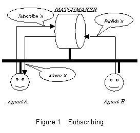 In subscribing (Figure 1), an agent asks a matchmaker to monitor for an information X. If information providing another agent subsequently informs the matchmaker about X then the matchmaker in turn informs the subscribing agent. This is a popular function of mediating systems called “publish and subscribe” or “content-based routing” in various distributed systems.
The subscribing brokerage is generally requesting information about new status resulting from some world’s change, rather than agent’s capability description that DF handles.
So a matchmaker itself handles subscribing brokerage.
We propose to define matchmaker’s actions “SUBSCRIBE” and “PUBLISH” as follows.
(SUBSCRIBE :content <requirement pattern about desired information>)
(PUBLISH :content <statement about new information>)
When a matchmaker receives a request for action “SUBSCRIBE”, it records the description of desired information. When some agent informs the concerning information to a matchmaker by “PUBLISH”, the matchmaker matches the requested pattern and the new information and desired information is forwarded to a subscriber. Subscribing requests are persistent; a matchmaker keeps the request and forwards the requested information to the subscriber until it receives a cancel from the requester.
We also define matchmaker’s actions “UNSUBSCRIBE” to cancel the subscription.
(UNSUBSCRIBE :content <pattern> )
Followings are example scenarios of messages of subscribing.
Step 1) Requesting message from a subscriber to a matchmaker:
(request
:sender <subscribing agent>
:receiver <matchmaker>
:contents
(action <matchmaker>
(SUBSCRIBE
:content <requirement pattern about desired information>))
:reply-with tag1
:language SL
:ontology MATCHMAKER
:protocol fipa-request
:conversation-id subscribe1
…)
Step 2) At some time, a matchmaker receives publishing message from other agent.
(request
:sender <information providing agent>
:receiver <matchmaker>
:content
(action <matchmaker>
(PUBLISH :content <statement about new information))
:language SL
:ontology MATCHMAKER
…)
Step 3) Then, a matchmaker forwards that information to a subscriber if new information matches the subscribed requirement pattern.
(inform
:sender <matchmaker>
:receiver <subscriber agent>
:content
(result (action <matchmaker>
(SUBSCRIBE :content <requirement pattern about requesting information>))
<statement about new information matches subscribed requirement pattern>)
:language SL
:ontology MATCHMAKER
:in-reply-to tag1
:conversation-id subscribe1
…)
Note: Along with the fipa-request protocol, a replying message such that “agree”, “refuse” or else for requesting action is returned by a receiver. In this document, such replying messages are omitted in example scenarios for simplicity
D.4.2 Recommending and advertising
In recommending brokerage (Figure 2, this is conceptual one), an agent asks a matchmaker to find agents that can deal with the request X. Other agents independently advertise the matchmaker that they are willing to deal with requests matching X. Once the matchmaker has both of these messages, it replies the reference of the informing agent to the asking agent. Then, the requesting agent and the advertising agents can communicate with each other directly.
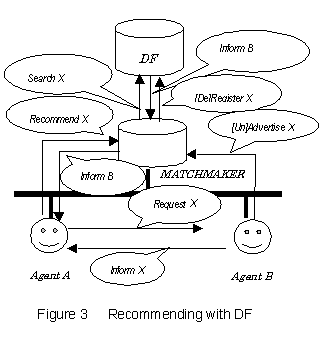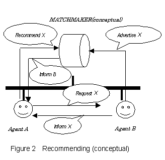This is a basic service of both DFs in FIPA 97 specification part 1 and ARBs in FIPA 97 specification part 3, and actions for this brokerage have already been prepared. The action “register” of DFs and “register-software” of ARBs can be used to express the willingness of the agents and software services (this is often called an advertisement). DFs have the action “search” for recommending. (In ARBs, with the predicate “registered”, sending a communicative act with “query-ref” finds an entity matching a requesting description and ARB recommends it to the requester. Sending a communicative act with “query-if” confirms whether a specified entity is available or not.)
Although agents can request recommending and advertising to DF directly by requesting to do its action “search” and “register”, however we also propose defining matchmakers’ actions such that “RECOMMEND”, “ADVERTISE” and “UNADVERTISE” for uniformity.
(RECOMMEND :agent-condition <desired agents’ description>)
(ADVERTISE :agent-description <agent’s df-description>)
(UNADVERTISE :agent-description <agent’s df-description>)
When a matchmaker receives requests of these actions, it translates them to the corresponding requests to a DF using DF’s actions (Figure 3). By requesting brokerage indirectly through matchmaker’s actions, we can get uniform and flexible ways as in the case of subscribing.
D.4.2.1 Recommending
The followings are example messages for recommending with matchmaker and DF. (See Figure 3)
Step 1) An requesting agent requests to a matchmaker for recommending desired agents.
(request[-when[ever]]
:sender <requesting agent>
:receiver <matchmaker>
:content
[(] (action <matchmaker>
(RECOMMEND
(:agent-condition <desired agents’ descriptions>)))
[<condition-when[ever]>)]
:language SL
:ontology MATCHMAKER
:protocol fipa-request
:reply-with tag1
:conversation-id recommend1
…)
Step 2) Then, a matchmaker requests searching agents to its registered DF by action “search”.
(request[-when[ever]]
:sender <matchmaker>
:receiver <DF>
:content
[(] (action <DF>
(search
(:df-description <desired agent description>)
(:df-depth <depth limit>)
…))
[<condition-when[ever]>)]
:language SL
:ontology fipa-agent-management
:reply-with tag2
:conversation-id recommend1
…)
Note1: If the first request from original <requesting agent> to matchmaker is using “request-when[ever]”), then this second request from matchmaker to DF must use same requesting communicative act with same <condition-when[ever]> in original request.
Note2: In order to request recommending agents, a matchmaker must know some DF. Asking its HAP’s default DF or otherwise, registering some DF to a matchmaker is needed. To register DFs to a matchmaker, we also need define action like “REGISTER-DF” of matchmaker similar to DFs’ “register” action.
Step 3) DF recommends some agents by replying inform message as a result of performing “search” action.
(inform
:sender <DF>
:receiver <matchmaker>
:content
(result
(search
(:df-description <desired agent description>)
(:df-depth <depth limit>)
…)
(<recommended agents’ descriptions>
…
<recommended agents’ descriptions>)
)
:language SL
:ontology fipa-agent-management
:in-reply-to tag2
:conversation-id recommend1
…)
Step 4) When a matchmaker receives resulting message from DF, it relays the result to requesting agent.
(inform
:sender <matchmaker>
:receiver <requesting agent>
:content
(result
(action <machmaker>
(RECOMMEND
(:agent-condition <desired agent description>)))
(<recommended agents description>
…
<recommended agents description >)
)
:language SL
:ontology MATCHMAKER
:in-reply-to tag1
:conversation-id recommend1
…)
D.4.2.2 Advertising and Unadvertising
The followings are example messages for advertising and unadvertising.
Step 1) First, an agent [un]advertises to its description to a matchmaker.
(request
:sender <requesting agent>
:receiver <matchmaker>
:content
(action <matchmaker>
([UN]ADVERTISE
(:agent-description <agent’s df-description>))
:language SL
:ontology MATCHMAKER
:conversation-id advertise1
…)
Step 2) Then a matchmaker forwards the agent’s description to DF by requesting corresponding DF’s action “[de]register”.
(request
:sender <matchmaker>
:receiver <DF>
:content
(action <DF>
([de]register
(:df-description <agent’s df-description>)))
:language SL
:ontology fipa-agent-management
:conversation-id advertise1
…)
D.4.3 Brokering and recruiting
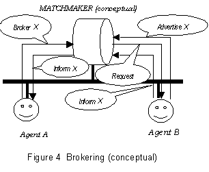 More sophisticated ways of brokerage are brokering and recruiting. In brokering (conceptual one) (Figure 4), an agent asks a matchmaker to find other agents that can deal with the request X. Other agents independently inform the matchmaker that it is willing to deal with requests matching X. Once the matchmaker has both of these matched messages, it sends the request X to the advertising agent and gets a reply and forwards it to the asking agent.
In recruiting (also conceptual) (Figure 5), an agent also asks a matchmaker to find an agent that is willing to deal with the request X. In this case, when the matchmaker sends X to the agent, it directly replies to the asking agent.
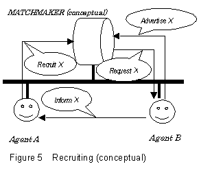 One of big differences of brokering and recruiting from recommending is a proxy type of action. For brokering and recruiting, it is required for matchmakers not only to find agents suitable to a request but also to ask these agents to execute the request on the behalf of the requesting agent. This brings several advantages. Agents have only to access a matchmaker for requests to other agents. Also, in brokering, requested agents can be hidden completely from requesting agents, which may enable certain type of secure brokerage.
Because a DF provides only recommending brokerage service and does not provide brokering and recruiting brokerage services, to realize these brokerages, another agent (i.e. a matchmaker) that requests actions to suitable other agents is needed. So, we introduce a matchmaker agent and define its action “PROXY” as the proxy type of action as mentioned in the above.
D.4.3.1 Proxy actions
A proxy type of action required for brokering and recruiting is defined in the following way:
(PROXY :action <action> :agent-condition <condition> [:reply-to <agent>]).
<action> is a communicative act (mainly requesting action) message that a matchmaker is asked to send agents on the behalf of the original sender. <condition> is a condition that desirable agents must satisfy as a target of <action>. According to this condition, the matchmaker finds target agents, and sends <action> to all of them. A parameter “:reply-to <agent>” is optional and, if specified, it indicates that the result messages of the requested action should be sent back not to the sender, that is, the matchmaker, but to <agent> directly.
With this proxy action, brokering and recruiting can be realized by requesting the following actions to a matchmaker:
Brokering: (PROXY :action <action> :agent-condition <condition>)
Recruiting: (PROXY :action <action> :agent-condition <condition> :reply-to <agent>).
For brokering, the matchmaker records the original requester and forwards the result messages to it. For recruiting, “:reply-to” parameter must be specified. In other words, if “:reply-to” option is specified then the “PROXY” action behaves for recruiting and otherwise it behaves for brokering. With this “PROXY” action and in cooperation with DF, a matchmaker provides brokering and recruiting brokerage services (Figure 6, 7).
Persistent requests for brokerage (i.e. request to a matchmaker) can be realized by combinations of these “PROXY” actions and “request-when”, “request-whenever” communicative act types, instead of “request”. On the other hand, in order to request an action to target agents persistently, one can use “request-when”, “request-whenever” in <action>.
Note: In stead of representing brokering and recruiting by one action “PROXY”, two actions “BROKER” and “RECRUIT” may be defined in a matchmaker. In this case, for recruiting, a parameter ”:reply-to” is not necessary because from “:sender” parameter a matchmaker can extract a destination of result message of requested action.
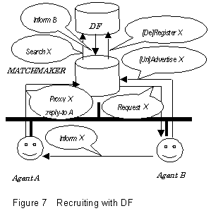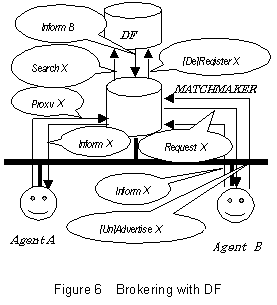
D.4.3.2 Messages
In this section, we show examples of messages dialogues for brokering, and recruiting. These messages follow FIPA protocols such as “fipa-request” and “fipa-query” in general.
D.4.3.3 Brokering
Step 1) First, a brokering request can be realized with “request”-ing “proxy” action from <requesting agent> to a matchmaker.
(request[-when[ever]]
:sender <requesting agent>
:receiver <matchmaker>
:content
[(]
(action <matchmaker>
(PROXY
:action <action>
:agent-condition <desired agents’ description>))
[<condition-when[ever]>)]
:language SL
:ontology MATCHMAKER
:protocol FIPA-REQUEST
:reply-with tag1
:conversation-id broker1
… )
Step 2) Only DF has information about agents’ capability description, then a matchmaker consults DF for recommending (yellow-pages) services by requesting “search” to DF to get agents matches to desired capability description.
(request[-when[ever]]
:sender <matchmaker>
:receiver <DF>
:content
[(]
(action <DF>
(search
(:df-description <desired agent description>)
…))
[<condition-when[ever]>)]
:language SL
:ontology fipa-agent-management
:reply-with tag2
:conversation-id broker1
…)
Step 3) DF recommends some agents by replying inform message as a result of performing “search” action.
(inform
:sender <DF>
:receiver <matchmaker>
:content
(result
(search
(:df-description <desired agent description>)
…)
(<recommended agent’s descriptions>
…
<recommended agent’s descriptions>)
)
:language SL
:ontology fipa-agent-management
:in-reply-to tag2
:conversation-id broker1
…)
Step 4) Forth, when a matchmaker receives recommended agents from DF, then it sends <action> message to each of recommended agents.
(request
:sender <matchmaker>
:receiver <one of recommended agents>
:content
(action <one of recommended agents>
<action>)
…
:language SL
:ontology <ontology-of-target-agent>
:reply-with tag3
:conversation-id broker1
…)
Step 5) A matchmaker will receive replying messages from a target agent.
(inform
:sender <one of target agent>
:receiver <matchmaker>
:content
(result
(action <one of target agent> <action>)
<statement of resulting information>)
:language SL
:ontology <ontology-of-target-agent>
:in-reply-to tag3
:conversation-id broker1
…)
Step 6) Then a matchmaker forwards resulting information to original requesting agent.
(inform
:sender <matchmaker>
:receiver <requesting agent>
:content
(result
(action <action>)
<statement of resulting information>)
:language SL
:ontology MATCHMAKER
:protocol fipa-request
:in-reply-to tag1
:conversation-id broker1
…)
Note: When a matchmaker receives a request for brokering, it must record values of :conversation-id , :reply-with and :sender parameter, and to make final replying messages and determine its receiver, a matchmaker will use them.
D.4.3.4 Recruiting
Step 1) An recruiting request can be realized with “request”-ing “proxy” actions from <requesting agent> to a matchmaker with a :reply-to parameter whose value indicates a receiver of replying messages informing result of requesting action to desired target agents (normally it is equal to <requesting agent>.)
(request[-when[ever]]
:sender <requesting agent>
:receiver <matchmaker>
:content
[(] (action <matchmaker>
(PROXY
:action
<action>
:agent-condition <desired agents’ description>
:reply-to <requesting agent>))
[<condition-when[ever]>)]
:language SL
:ontology MATCHMAKER
:protocol FIPA-REQUEST
:reply-with tag1
:conversation-id recruit1
… )
Step 2) A matchmaker asks to DF to recommend desired agents.
(In the case of recruiting brokerage, the second requesting message to DF and the third message recommending agents are same as brokering.)
(request[-when[ever]]
:sender <matchmaker>
:receiver <DF>
:content
[(] (action <DF>
(search
(:df-description <desired agent description>)
…))
[<condition-when[ever]>)]
:language SL
:ontology fipa-agent-management
:reply-with tag2
:conversation-id recruit1
…)
Step 3): DF replies to a matchmaker.
(inform
:sender <DF>
:receiver <matchmaker>
:content
(result
(search
(:df-description <desired agent description>)
…)
(<recommended agents’ descriptions>
…
<recommended agents’ descriptions>))
:language SL
:ontology fipa-agent-management
:in-reply-to tag2
:conversation-id recrit1
…)
Step 4) A matchmaker requests <action> to each recommended agents like brokering. However in recruiting case they reply resulting messages not to the matchmaker but to the original requesting agent, so a matchmaker must include the information of <requested agent> in requesting <action> somehow. In order to tell them the replying destination, in this scenario, a matchmaker set the requesting agent’s name to the value of “:sender” parameter. Because the receivers (target agents of requested <action>) treat “:sender” value as a destination of replying message normally, so replying message is send to the original requesting agent. But this method may be problematic from the point of agent management especially from security management.
(request
:sender <requesting agent>
:receiver <one of recommended agents>
:content
(action <one of recommended agents(same as receiver)>
<action>
)
…
:language SL
:ontology <ontology-of-target-agent>
:reply-with r3
:conversation-id recruit1
…)
Step 5): Resulting message is send to the original requesting agent directly from a target agent that performs the requested action.
(inform
:sender <one of target agent>
:receiver <requesting agent>
:content
(result
(action <one of target agent> <action>)
<proposition about resulting information>)
:language SL
:ontology <ontology-of-target-agent>
:in-reply-to r1
:conversation-id recruit1
…)
Note: In Step 4, there may be other ways for replying resulting message to original requesting agent directly.
1) Extend the definition of ACL message parameters (related FIPA97 part2 specification) to include “:reply-to” parameter that indicates the destination of replying result messages. In this case, agents receive such messages with “:reply-to”, must set generally the replying address to that value. Note that this case’s parameter “:reply-to” is one on the ACL message level. So, this is a different one to user defined action’s parameter (e.g. “PROXY”’s “:reply-to”).
(request
:sender <matchmaker>
:receiver <one of recommended agents>
:reply-to <requesting agent>
:content
(action <one of recommended agents(same as receiver)>
<action>
)
…
:language SL
:ontology <ontology-of-target-agent>
:reply-with r3
:conversation-id recommend1
…)
2) If a parameter like a matchmaker’s action “PROXY’s “:reply-to” (this is not in the ACL messages level parameter as in 1)) is defined as the optional parameter of target agent’s action in the ontology used by them, and the requested agents can understand as the destination of replying messages, then adding that parameter on requesting. This depends on specific ontology and individual agents’ action definitions.
3) If requested <action>’s result is available by querying result predicate then a matchmaker can requests sequential composite action consists of <action> and <inform-ref>. In this request, the ”:receiver” of <inform-ref> can be specified by a requesting side agent (i.e. matchmaker) to a original requesting agent. So, informing result of action message is sent directly to the requesting agent.
(If action of informing the result is implicitly contained in performing <action> definition in the target agents, then the agents also sends a message informing result to ”:sender” of request of composite action (i.e. a matchmaker.))
(request
:sender <matchmaker>
:receiver <one of recommended agents>
:content
((action <one of recommended agents(same as receiver)>
<action> ) ;
(inform-ref
:sender <one of recommended agents>
:receiver <requesting agents>
:content (result
(action <one of target agent> <action>)
<proposition about resulting information>)
:language SL
:ontology <ontology-of-target-agent>
:in-reply-to tag1
:conversation-id recruit1
…))
…
:language SL
:ontology <ontology-of-target-agent>
:reply-with tag3
:conversation-id recommend1
…)
D.5 Brokerage under multiple matchmaker environment
Brokerage under environment with multiple matchmakers can be realized by registering their matchmaking services in a similar way to registrations of ordinary agents. When a matchmaker receives a request, it offers a brokerage service and if it is willing to federate to other matchmakers it asks DF to recommend other matchmakers. Then the matchmaker forwards the request to the recommended matchmakers whose registered descriptions match the request. For this purpose, small extensions are required for matchmaker’s brokerage actions.
D.5.1 Requesting to matchmakers
Under inter-matchmaker communications, when a matchmaker receives a request, it offers a brokerage service such as recommending, brokering etc., and at the same time, it forwards the request message to other matchmakers recommended by DF whose descriptions match the request. Therefore, according to replies from DF, a matchmaker must change its behavior. To distinguish matchmakers and other agents, a word “matchmaking-service” should be reserved as a service name registered in DF.
Also, since the topology of links of matchmakers may be not known in general, a request should include some information to control behaviors of matchmakers.
To clarify these, we introduce a new optional parameter “:matchmaker-condition”, “:hop-count” and “:reply-by” in matchmaker’s brokerage actions, which is defined in the following way:
(PROXY :action <Action> :agent-condition <condition>[:reply-to <agent>]
[:matchmaker-condition <condition-matchmaker>][:hop-count <count>][:reply-by <time limit>])
(RECOMMEND :agent-condition <condition>
[:matchmaker-condition <condition-matchmaker>][:hop-count <count>][:reply-by <time limit>])
When a matchmaker receives a request of action with these parameters, it executes and at the same time forwards this message to other matchmakers. Matchmakers for forwarding are selected by matching <condition-matchmaker> with their registered descriptions by requesting “search” with that condition to DF similar to selecting agents by <condition>. If <condition-matchmaker> is not specified, <condition> is used to select matchmakers.
A parameter “:hop-count” controls how many matchmakers a request is forwarded to. The value of this parameter must be a nonnegative integer. When a matchmaker forwards a request to other matchmakers, the value of “:hop-count” must be decreased by 1 and if the value is zero then the request must not be forwarded further. For example, if a request has the parameter “:hop-count” with value 2 then the request is forwarded to at most three matchmakers. In the following figure, the matchmaker4 is not reachable.
The parameter “:reply-by” may also control the behavior of matchmakers; each matchmaker must reply until the specified time so that the scope of forwarding messages may be restricted.
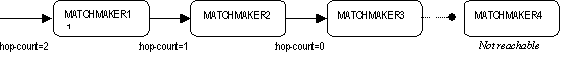
When requesting brokerage message is forwarded from one matchmaker to another
matchmaker, the “:sender” and the
“:receiver of the propagated
message must be changed in the appropriate way.
D.5.2 Brokerage by inter-matchmaker communications
For example, a recommending request from a requesting agent to a (first) matchmaker can be described in the following way.
(request[-when[ever]]
:sender
<requesting agent>
:receiver <first matchmaker>
:content
[(] (action
<first matchmaker>
(RECOMMEND
:agent-condition
<requirement pattern of desired agent>
:matchmaker-condition
<condition-matchmaker>
:hop-count 3))
[<condition-when[ever]>)]
)
:language SL
:ontology MATCHMAKER
:protocol fipa-request[when[ever]]
… ).
When first matchmaker receives this request, it asks DF to search matchmakers matching its registered description to the <condition-matchmaker>. If such a matchmaker is recommended, then this requesting message is forwarded to matchmaker as follows. Note that “:hop-count” is decreased.
(request[-when[ever]]
:sender <first
matchmaker>
:receiver <second matchmaker>
:content
[(] (action
<first matchmaker>
(RECOMMEND
:agent-condition
<requirement pattern of desired agent>
:matchmaker-condition
<condition-matchmaker>
:hop-count 2))
[<condition-when>)]
)
:language SL
:ontology MATCHMAKER
:protocol fipa-request
… ).
A example of brokering is shown below. In this case, if there is a matchmaker (i.e. it has “matchmaking-service” as a service name) among agents that match <condition>, then this requesting message is forward to it.
(request[-when[ever]]
:sender
<requesting agent>
:receiver <first matchmaker>
:content
[(] ((action
<first matchmaker>
(PROXY
:action
<action>
:agent-condition
<condition>
:hop-count 3))
[<condition-when[ever]>)]
)
:language SL
:ontology MATCHMAKER
:protocol fipa-request
… ).
D.6 Other issues
The matchmaker service is closely related to the CORBA trader service [2]. The CORBA trader service also offers mediation functionality with interworking (federation) of traders although it provides only the recommending service. The CORBA trader service prescribes the brokerage with many detailed parameters for various policies on trading services. Considering these parameters for matchmakers may be useful even for FIPA agent environments although the distributed object environments are tighter than FIPA agent environments as far as collaborations are concerned. In this proposal, we introduced only “:hop-count” parameter from the CORBA trader service; we think that other parameters of the CORBA trader service are too much detailed for FIPA agent environments and may weaken the autonomy of agents.
D.7 Conclusion
A matchmaker agent having “SUBSCRIBE”, “UNSUBSCRIBE”, “PUBLISH”, “RECOMMEND”, “ADVERTISE”, “UNADVERTISE” and “PROXY” actions is introduced. By requesting these actions, various brokerages are realized uniformly. Action “PROXY introduced here can also be used for other purposes. It is useful to realize general proxy type of actions of agents.
D.8 References
[1] Finin, T., Labrou, Y. and Mayfield, J.: KQML as an agent communication language. In Bradshaw, J. (Ed.), Software Agents. MIT Press. Cambridge. 1997.
[2] Object Management Group: Trading Object Service. CORBA services: Common Object Services Specification
Annex E
Result of the first interoperability trials
|
Author |
FIPA TC D |
|
Date |
Seoul, 25-29 January, 1999 |
|
Title |
Result of the first interoperability trials |
|
Distribution |
Public |
Abstract: FIPA started a campaign of interoperability tests between Agent Platforms separately implemented by different companies. For this purpose, a new Technical Commette (TC D) has been established. At the Seoul meeting, 4 companies (Broadcom, Comtec, Cselt and Siemens) joined this TC by connecting their platforms together and running basic application scenario of appointment scheduling. The tests were mostly successful, although not every combination of different implementations functioned properly. The trial members came up with a set of comments and suggestions to the specifications, which will be investigated by appropriate technical committees responsible for the maintenance of the specification. The group established a future plan of interoperability trials for the rest of the year. It is expected that public agent platform accessible at anytime and from anywhere in the Internet will be deployed by the members. In order to improve the effectiveness of these tests, FIPA solicits member and non-member companies to join the TC and test their agent platform implementations.
The goal for the first interoperability trials was to test:
- FIPA 97 Specification Part 1 (Agent Management): functionality of the Directory Facilitator (DF); and
- FIPA 97 Specification Part 2 (Agent Communication Language): the grammar, the communicative acts, the SL0 content language, and some interaction protocols.
In the first step, the tests concentrated on the interoperability between agent platforms. The following tests were performed:
- send a message from an agent located on a platform to other agent located on a different platform;
- registration with a DF of a different platform;
- use of the DF services;
- creation of a federation of DFs from different agent platforms ; and
- basic calendar scheduling using CFP communicative act and FIPA-CONTRACT-NET interaction protocol.
|
Company |
Hostname |
OS |
ORB |
Programming Language |
|
Broadcom |
scooter |
Solaris |
Orbix |
SICStus Prolog |
|
Comtec |
shox |
Windows NT |
JDK 1.2 |
kawa |
|
CSELT |
cpq6445 |
Windows NT |
JDK 1.2 |
Java |
|
Siemens |
M11077PP |
Windows NT |
JDK 1.2 |
Java |
IIOP is the baseline communication protocol between agent platforms. FIPA specifies the IDL but how initially IORs are exchanged is not mentioned in the specification. The adopted solution in the group is to share a directory where all platforms put a file with their IOR. Anonymous FTP and Microsoft file sharing was set up on shox to exchange IOR.
File names:
Broadcom.ior
Comtec.ior
Cselt.ior
Siemens.ior
File format:
IOR<sp>IIOP-URL<cr>
Example:
IOR:0123456789ABCDEF… iiop://shox:50/acc/
|
|
from |
Broadcom |
Comtec |
Cselt |
Siemens |
|
to |
|
||||
|
Broadcom |
|
F T P R |
F I P R S C |
F I P R S |
|
|
Comtec |
F T P R S |
|
F T P R S |
F T P R S |
|
|
Cselt |
F I P R S |
F |
|
F I P R S |
|
|
Siemens |
F I P R S |
F T P R |
F I P R S C |
|
|
Legend:
F - FTP Ready
I – IIOP reached
T – Text-based communication (without IIOP)
P – message parsed
R – registered an agent with the DF
S – search with the DF
C – cfp/contract net works
The "unknown" state should be included in the list of valid DFLifeCycle states.
The current ACC specification is weak. Its role in the multi-agent system is currently to serve all the "request (forward …)" messages. The burden of selecting the transport protocol is given to each agent.
The proposal is to extend the IPTM (Internal Platform Transport Mechanism) by specifying that it must be able to access the IIOP transport mechanism (or whatever baseline protocol FIPA will use) when it recognizes that a receiver is not internal to the platform. The burden to decide which form of message, i.e. request to forward, or just the message, should be removed by the agents.
That means to decide to remove, or not, the Request Forward action.
The current TC1 specs specifies
AgentName = Word "@" CommAddress
CommAddress = CommProtocol "://" (IPAddress|DNSName) ":" Integer "/" ACCObj.
Problem with the specification of the Agent Name (TC1). In some cases it is usefull to use the IOR address, the agent name should become the following:
AgentName = Word "@" CommAddress
CommAddress = IORAddress | URLAddress
IORAddress = "IOR:" HexWord
URLAddress = CommProtocol "://" (IPAddress|DNSName) ":" Integer "/" ACCObj
HexWord = ["0"-"9","a"-"f","A"-"F"]+
It must be clarified that the AgentName must be a valid transport address and not only a logical name.
It is necessary to analyse the difference between agent-name and agent-address, if both are really necessary, and if it is better to introduce a new DF description attribute with the physical location of the agent (e.g. comtec.shox).
The current FIPA specs allow to register with the DF both an agent description and a description of the services it provides. Both descriptions include 3 common properties: type, name, and ontology. It is proposed to specify clearly the difference, that is "what is the description of an agent" and "what is the description of its services". Some examples may clarify.
Same problem applies both for part 1 and part 3.
This interface must not be part of any package, otherwise an exception is thrown. Even if this is implicitly defined in the Part 1 specs, it is better to explictly reinforce this concept.
The interface must be statically constructed. Some implementation of DII does not work with static interface.
If agent crashes after registering to a DF, the agent must restart and register to the DF again. However, the previous instance of the agent is already registered in the DF and duplicated registration request from the new instance of the agent is refused. DF must be able to handle the situation (possibly by communicating with AMS which manages the agent’s physical lifecycle).
Expressing list in SL. The DF and the AMS results can be a list of agent descriptions, in this case we need a standard way to express list in the Fipa-Agent-Management.
Three proposals are proposed by this group:
1. (result (action …) ( (:df-description …) (:df-description …) (:df-description …) ) )
in this case the SL syntax must be extended
2. (result (action …) (list (:df-description …) (:df-description …) (:df-description …) ))
in this case the list functional symbol must be added to the fipa-agent-management ontology
3. (result (action …) (:df-description …) (:df-description …) (:df-description …) )
without external parenthesis
in this case the grammar of Fipa97 Part 1 result predicate must be modified
It is suggested to establish a standard policy of using ":" keyword and lists. In Lisp the ":" keywords are used to reduce the number of cons cells. The ACL adopts in fact the Lisp convention, while the Agent Management Ontology not.
In the current specs sometimes the value of a property is specified to be a list and sometimes not. Some inconsistencies appear:
For instance, in the following cases the value is not a list:
"(" ":address" CommAddress+ ")"
"(" ":services" Fipa-service-desc+ ")"
in the following cases, instead, the value is specified to be a list:
"(" ":interaction-protocols" "(" Word+ ")" ")"
"(" ":language" "(" ContentLanguage+ ")" ")"
in the following cases, finally, the value is specified to be a SLTerm:
"(" ":ontology" SL0Term ")"
"(" ":ownership" SL0Term ")"
The proposal is to unify the notation. The following proposal was made by Luis Botelho:
Syntax for SL terms: represent descriptions
The main idea is to represent descriptions as functional expressions
in which the function is the constructor of the type and the
parameters are the components.
Simple example
(Car
:color red
:position (Position :x 1365 :y 12)
:speed (Speed :vx 145 :vy 0) )
Expression 1
Car is the constructor of type car, Position is the constructor of type
position, Speed is the constructor of type speed.
:color, :position and :speed are role names - this is just notation
for
(Car red (Position 1365 12) (Speed 145 0))
Expression 2
but has the advantage that the parameters can come in arbitrary order
and that you can omit parameters when you are not interested or you
don't know their values.
[You might think that the following expression
(Car
(color red)
(position (Position (x 1365) (y 12)))
(speed (Speed (vx 145) (vy 0))) )
Expression 3
has the same advantage mentioned above. However, the number of cons
cells (basic memory units of s-expression) for Expression 3 is 25
while it is 18 for Expression 1. Expression 1 requires less memory
than Expression 3.
-- Suguri]
Complex example
(mobject ; Constructor of the mobile object type
:object-id
(objID ; Constructor of the mobile object id type
:camera 2
:object-number 275 )
:tyme-stamp
(TimeStamp ; Constructor of the TimeStampDS data type
:year 1998
:month 12
:day 14
:hour 10
:minute 14 )
:object-description
(list-quote ; The description of an object is a list of features.
; The type, implicit in the syntax, is list.
((position
:x (uncertain-object 1534 0.7)
:y (uncertain-object 10 0.8)
:z (uncertain-object 0.5 0.8) )
(color
(uncertain-object
(list-quote (:h 255 :s 2 :v 23))
0.7 )))))
Constructor of the mobile object data type
mobject: ObjectIdDS x TimeStampDS x ObjectDescriptionDS -> OjbectDS
Constructor of the mobile object id type
objID: Byte x ULong -> ObjectIdDS
Constructor of the TimeStampDS data type
TimeStamp: UShort x UByte x UByte x UByte x UByte x Ubyte x Ushort -> TimeStampDS
Constructor of the type PositionDS
position: UncertainFloat x UncertainFloat x UncertainFloat -> PositionDS
Constructor of the type ColorDS
color: UncertainList -> ColorDS
Syntax
ExtendedSLTerm = SLTerm | // original grammar
Description |
Collection |
UncertainTerm.
Description = "(" ConstructorSymbol ConstructorSpec* ")"
ConstructorSymbol = SLFunctionSymbol.
ComponentSpec = ":" RoleName Value.
RoleName = Word.
Value = ExtendedSLTerm.
Collection = "(" "quoted-list" "(" ExtendedSLTerm+ ")" ")" |
"(" "quoted-list-of" TypeName "(" ExtendedSLTerm+ ")" ")" |
"(" "quoted-array-of" N TypeName "(" ExtendedSLTerm+ ")" ")".
TypeName = Word.
N = NaturalNumber.
UncertainTerm = "(" "uncertain-object" ExtendedSLTerm Confidence ")".
Confidence = RealNumber.
The current specs of SL does not allow to express tuples. Tuples are widely used, instead, to express the content of several communicative acts, like agree, failure, … It is here proposed to extend the SL grammar to allow expressing tuples.
The definition of this protocol allows the initiator to "cancel" an accepted proposal without any constraints on the time either on the status of the responders. The protocol should be better defined in order to constaint the communicative act "cancel", for instance to given time constraints.
In Part 2 the following two rules should be added :
"If an agent receives a message that has a value for the parameter :conversation-id, then every message that is sent in response to that one MUST include the parameter :conversation-id with the same value. In an interaction protocol, the same value of :conversation-id must be used for all the messages in the protocol."
"If an agent receives a message that has a value for the parameter :reply-with, then every message that is sent in response to that one MUST include the parameter :in-reply-to with the same value"
Example of a Contract-net protocol:
|
Comm. Act |
:conversation-id |
:reply-with |
:in-reply-to |
|
Cfp |
C1 |
R1 |
|
|
Propose /refuse / not-understood |
C1 |
R2 |
R1 |
|
Accept-proposal / reject-proposal |
C1 |
R3 |
R2 |
|
Inform /failure |
C1 |
|
R3 |
|
Cancel |
C1 |
|
|
Part 2 specifies that the value of the parameter :reply-by is a time token. This token is based on the ISO 8601 format, with extensions for relative time and millisecond durations. It is also specified that, optionally, the token can also include a type designator, where the type designator for UTC is the character "Z". Part 2 also says that "UTC is preferred to prevent time zone ambiguities".
It is here proposed to modify the specifications by allowing only the usage of relative times (that continues to be designated by the character "+" in first position) and the UTC type designator.
The reason for this proposal is to simplify implementation without any impact on the expressive power of the time token.
In Fipa97 version2.0 the value of some constant symbols is changed. It is proposed to add an annex with all the changes to simplify the implementors to maintain their implementations.
In order to continue the test campaign the following working assumptions have been made:
- "unknown" is a valid DFLifecycle state;
- the request to forward to the ACC is not used. It is assumed that the ACC is not an agent;
- the agent name is a valid transport address. In particular it is formed by the concatenation of the actual agent name and its transport address (e.g. fabio@IOR:00…..)
- The IOR of the agent platform is exchanged via directory sharing or ftp;
- The SL syntax is extended and the results of a search are expressed as shown in proposal 1 of section 4.2.1;
- The use of lists continues to comply with the Agent Management Ontology until it will be definitivly unified by the appropriate TC;
- The SL syntax is extended to allow t-uples as content of some communicative acts (e.g. agree, failure, …);
- A conversion is handle by using the rules specified in section 4.2.5;
- Time tokens are expressed as proposed in section 4.2.6;
The implementation of JADE, the CSELT Agent Platform, and of ASL FIPA gateway, the Broadcom Agent Platform, has been partly done within the framework of the European project FACTS, ACTS AC317.
The implementation of Comtec Agent Platform was partly supported by Information-technology Promotion Agency, Japan, contracts titled Promotion of Advanced Software Enrichment Project (Contract Number 8JOUKOUDAI95GOU) and Promotion of Support for Advanced Information-orientation Software Project (Contract Number 9JOUGIOUDAI596GOU).
Annex F
An iterative specification validation scheme based on negotiation
Laurent Maillet-Contoz, Isabelle Mougenot, Jean Sallantin
and Francois Arlabosse
{maillet_contoz, mougenot, sallantin}@lirmm.fr
farlabos@club-internet.fr
LIRMM - UMR 5506 Universit Montpellier II / CNRS
161, Rue Ada 34 392 Montpellier Cedex 5 France
AFSJ, Rue de la Croix Rouge, 78 430 Louveciennes, France
1 - Introduction
In this proposal, we introduce formal aspects for the validation of specifications. Methods such as B or VDM and languages such as Z are devoted to the formal specification of software. However, the purpose of these methods is to produce executable code with respect to the specifications, for software whose specifications are known in advance and invariant during the development. In our case, it is rather a question of hardening the specifications in order to validate them and to envisage their evolution. The validation corresponds to the stabilisation of knowledge, whereas the adaptation and the evolution can be perceived like the result of a reasoning on a stabilised knowledge. In this sense, we represent the specifications through ontology, in order to identify the set of terms which must be defined as well as the constraints connecting them. The originality of this approach lies in the use of mechanisms of negotiation, to allow the adaptation and the evolution of the specifications according to the developments and the uses.
In the problems concerned (part 2 of the CFP °7), the specifications are supposed to evolve according to the developments of new platforms and thus require a particularly effective refinement method. To address this issue, we propose an approach in three steps:
* Internal validation of the specifications, in order to check their total coherence
*
* Negotiation of the adaptation of the specifications according to the lacks identified by the developments
*
* Negotiation of the evolution of the specifications according to the evolution of the domain.
*
We detail in this proposal the three points of this approach and identify the needed tools. We develop in the following document our methodology of validation and adaptation of the specifications.
2 - Validation and adaptation of the specifications
The validation of the specifications consists in checking their total coherence. In this sense, we have to extract relevant information from the informal specifications given as a text in natural language, then to model this information as a hierarchy of terms bound by constraints, and finally to check its coherence.
The formal methods are not relevant in this context, because the initial specifications are far too informal, and because of their fast evolution it is not possible to pass easily from an informal description to a completely formal description.
Consequently, our approach is based on the identification of the concepts and the relations between them intervening in the specifications. We define an ontology as a hierarchy of terms connected by constraints. Thus, it is possible to represent the domain knowledge and to highlight for example the lacks of definitions, the inconsistency between the concepts present, or the lacks or excesses of constraints in the field.
Thus, for example, we can model the sending of the various messages which the agents must exchange in order to lead to an agreement for a meeting. We define two particular contexts of transmitter and receiver of message, and identify the messages which it is possible to receive.
Sender
ScheduleRequest
CFP
Accept
Reject
Receiver
Propose
Refuse
Inform
Failure
Notify
The associated constraints describe which are the possible answers between the various agents, in order to check that the protocol given in the specifications is respected:
Imply ScheduleRequest, Notify
Imply CFP, Propose
Imply CFP, Refuse
Exclude Propose, Refuse
Imply Accept, Inform
Imply Reject, Inform
Imply Accept, Failure
Imply Reject, Failure
Exclude Inform, Failure
We call ontology, or grid, the hierarchy of terms and the associated constraints. This ontology is used with a constraint propagator, to select the presence or the absence of terms in the grid, in order to identify situations in which paradoxes can be highlighted. This indicates insufficiencies in the specifications. In this case, it is necessary to re-examine them, and to refine consequently the corresponding ontology.
The ultimate goal of this step is to provide a valid and coherent version of the grid modelling the specifications, depending on the state of the informal specifications. Once this grid is stabilised, it should be made persistent:
* to provide a grid in order to analyse the conformity of the applications with the specifications
*
* to allow the consultation of the specifications and the search for specifications from particular points of view
*
* to allow reasoning on this grid to improve it
*
However, the specifications are supposed to evolve according to the gaps which were identified during the construction of the grid, relating to the comments or the needs of the developers. It is in consequence necessary, in a second step, to provide adaptation of the specifications according to the developments.
This adaptation is carried out by identifying the gaps of the specifications, through developments carried out on the platforms, and by using negotiation mechanisms. The adaptation of the specifications occurs through several aspects:
* Insufficiency of the specifications, it is then necessary to enrich the specifications, by respecting their initial coherence. For that, the negotiation engine is used so that enrichments produce a new version of the specifications, which is correct by construction, i.e. which respects the previous constraints,
*
* Refutation of part of the specifications: That indicates an over-specification, which it is illusory to respect from an implementation point of view. Two aspects are then identifiable:
*
* Relating to terms, which indicates that the concepts defined in the specifications are not satisfactory, according to the various developments,
*
* Relating to the constraints imposed on these terms: In this case, that indicates an excess or a lack of precision.
*
The mechanisms of negotiation are well-suited to the adaptation of the specifications, because their purpose is to find an agreement between users who may have conflicting goals and interests. The base of the negotiation is provided by the grid which represents a state of the specificationsto be improved. The negotiation intervenes to let the users express the potential refutation of the elements of the grid, and produce a new consensual and coherent grid, which refines the preceding specification. A module to be envisaged is the automatic generation of the specifications in a formal language from the grid, in order to engage mechanisms of proof.
3 - Conclusion
We have presented in this contribution a methodology of validation and adaptation of the specifications, based on the extraction of a set of terms and constraints since specifications are provided as an informal text. We showed that the formal methods for the validation of the specifications are not relevant, because of the very informal nature of the specifications, and because of their fast evolution. Our approach, based on an extraction of the terms of the text, identifies the set of the concepts to be present or to be excluded in an application so that it respects the specifications.
The adaptation of the specifications is carried out according to the developments which can show gaps or errors in the specifications. In this case, it is a question of negotiating the modifications to be made in the specifications, based on a common grid representing the state of initial specifications, while respecting to the maximum the initial constraints. Lastly, the evolution of the field forces to make evolve the specifications according to same principles.
References
[Abr96] J.R. Abrial, The B Book, Assigning programs to meanings, Cambridge University Press, 1996
[AI91] D. Andrews and D. Ince, Practical Formal Methods with VDM, Mc Graw Hill, 1991
[1] Currently there are no FIPA activities investigating conformance testing; however, this is likely to become an important issue in 1998/9.
[2] This section borrows heavily from [5], with the author's permission.
[3] The term agent is loaded; it means different things to different people. The view aims to give the appropriate context for understanding the FIPA97 specification.
[4] Not necessarily all of these for any one instance of an agent.
[5] An agent is at a higher level of abstraction.
[6] There is an exception to this statement, 'Swarm' intelligence. This is a form of distributed artificial intelligence modelled on ant-like collective intelligence. The ant-like 'agents' collaborate to perform complex tasks, which individually they are unable to solve due to their limited intelligence (e.g. ant-based routing).
[7] One definition of an agent is that of a software entity that can answer 'No' (if it disagrees about the same information based on its own knowledge), 'Not understood', or simply ignore the request.
[8] In a strictly conformant implementation of the FIPA Contract Net protocol each agent which receives the cfp message would reply with an agree message to indicate their intention to propose in response to cfp.
[9] Time slots have a granularity of half an hour